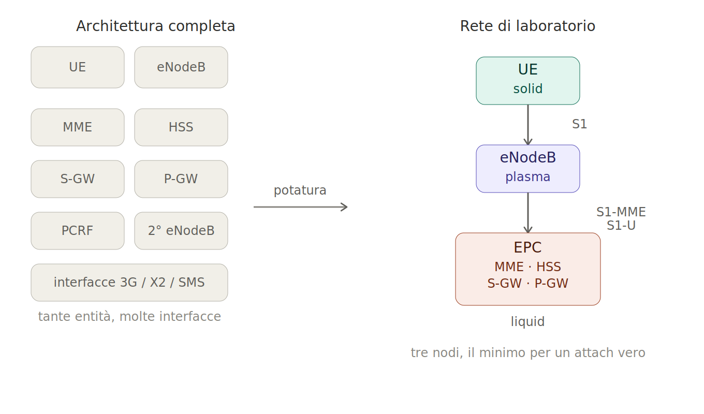
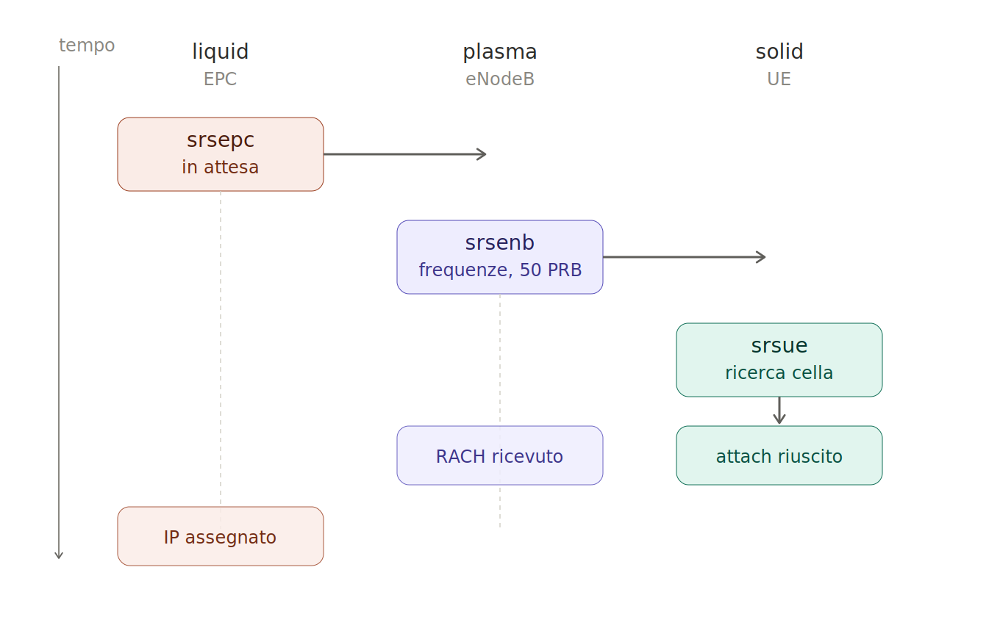
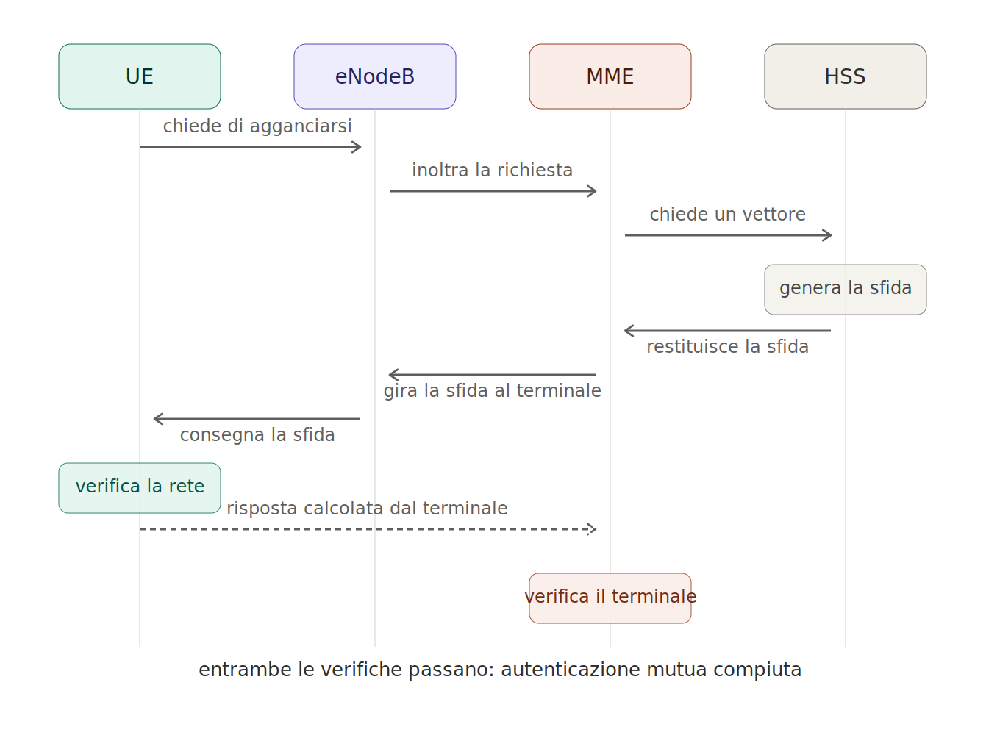
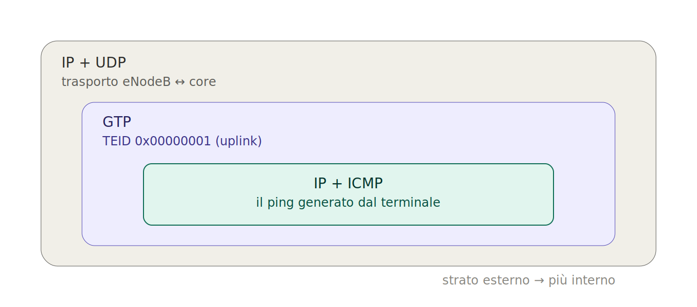
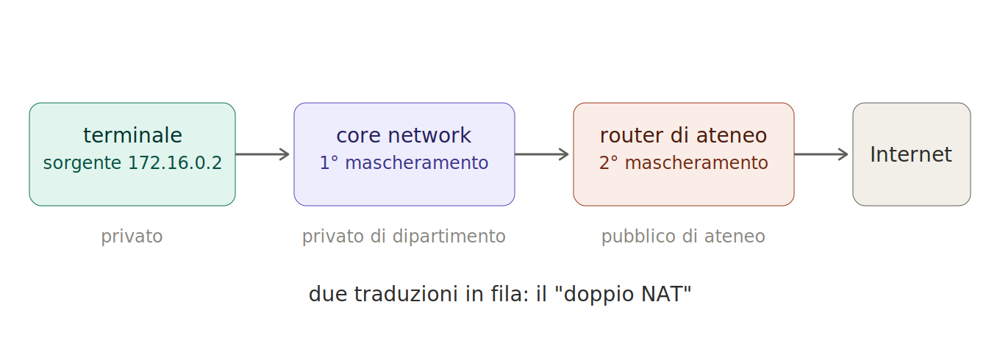
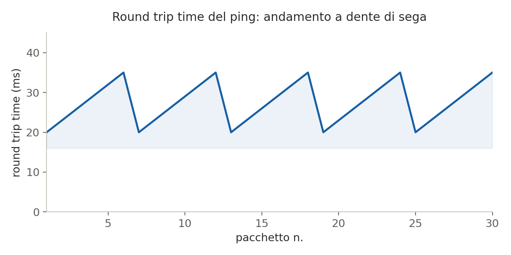

Cronaca e guida al laboratorio conclusivo del modulo "Architettura e Protocolli" del corso di Reti Cellulari e 5G, Ingegneria Informatica, Università degli Studi di Brescia. Cinque parti, più una sezione operativa per chi vuole rifare l'esperimento.
Una rete LTE completa, con la sua segnalazione, l'autenticazione mutua e i tunnel dati, sta per intero in tre computer Linux, due radio da un migliaio di euro e una manciata di file di testo. Non è una simulazione: il segnale è vero, i protocolli sono quelli standard, e alla fine ci si aggancia un telefono qualunque, che non si accorge di parlare con un laboratorio invece che con un operatore. Quello che segue racconta come è stato fatto, cosa dimostra sulla softwarizzazione delle reti cellulari, e come si rifà per conto proprio senza finire nei guai con lo spettro radio.
Le slide del corso citate qui sono materiale altrui, distribuito con licenza CC BY-NC-ND: i termini e i limiti che ne derivano stanno nella nota di attribuzione in fondo.
Nel laboratorio che chiude il modulo è stata costruita una rete LTE completa e funzionante dentro una stanza del dipartimento, e vi è stato collegato un telefono vero. Nessuna simulazione: la segnalazione che passava sulla core network e il segnale radio scambiato con il terminale erano autentici, conformi agli standard, indistinguibili da quelli di un operatore commerciale. La differenza sta nel conto: al posto delle stazioni base e degli apparati proprietari che costano quanto un'automobile di lusso c'erano tre computer Linux, due scatolette radio collegate via USB e del software open source.
Questa è la cronaca di come è stato fatto, e allo stesso tempo una guida per capire cosa succede davvero quando un telefono si aggancia a una rete. La trattazione è divisa in cinque parti. La prima fissa il quadro concettuale: il paradigma della Software Defined Radio, e la riduzione dell'architettura LTE dalle sue entità complete ai tre nodi che bastano a farla funzionare. La seconda copre configurazione e avvio, cioè i file di testo che definiscono l'identità della rete, la scelta della frequenza e l'ordine in cui i tre processi vanno lanciati. La terza legge il traffico che i nodi si scambiano: la segnalazione S1 su SCTP, l'autenticazione mutua fra terminale e rete, l'incapsulamento dei dati utente in tunnel GTP. La quarta passa alle misure: instradamento e doppio NAT verso l'esterno, round trip time e jitter come conseguenza della struttura a trame, capacità del canale, e in chiusura l'aggancio di un terminale commerciale. La quinta raccoglie i vincoli che condizionano ogni tentativo di replica, dallo spettro licenziato all'hardware alla USIM programmabile, e tira le somme di ciò che l'esperimento dimostra. Accanto a queste cinque parti c'è una sezione operativa separata, pensata per essere consultata piuttosto che letta in sequenza: è lì che stanno la procedura passo-passo, i comandi esatti e la checklist per chi vuole rifare l'esperimento da zero.
C'è un filo che tiene insieme tutti i pezzi, ed è il motivo per cui questo laboratorio vale più della somma dei suoi comandi. Ogni fase dell'esperimento è un'istanza dello stesso principio: separare una funzione dall'hardware che storicamente la incarnava. La radio separa la generazione del segnale dal chip che lo trasmette; il software di rete separa la stazione base e il nucleo di rete dagli apparati Huawei o Nokia; la SIM programmabile separa l'identità dell'abbonato dall'operatore che gliel'ha assegnata. È la traduzione concreta di ciò che a lezione si chiama softwarizzazione delle funzioni di rete. Nel modulo del corso dedicato al 5G questo principio ha un nome preciso, NFV (Network Function Virtualization), la definizione in software delle funzioni di rete: si innova senza sviluppare nuovo hardware, si scala comprando potenza di calcolo invece di apparati. Le slide teoriche del corso lo esemplificano proprio con una "Virtual EPC", che è alla lettera ciò che è stato costruito in laboratorio.
Un avvertimento va messo subito, perché è serio, e la quinta parte ci torna con precisione. Le frequenze usate dalla telefonia cellulare sono licenziate: appartengono agli operatori, che hanno pagato per usarle. Trasmetterci sopra, anche a bassa potenza, è un'attività regolamentata. In aula il segnale era volutamente debolissimo e confinato in pochi metri, ma per chi volesse rifare l'esperimento per conto proprio la prescrizione è netta e non ammette eccezioni: mai trasmettere via etere, indipendentemente dalla banda. Non esiste una porzione di spettro "sicura" di default quando si maneggia una radio general purpose capace di coprire un intervallo vastissimo di frequenze: il criterio resta lo stesso, cambia solo il servizio che si rischia di disturbare. La Parte 5 spiega come si allestisce un banco conducted, con la radio collegata al terminale software via cavo coassiale e attenuatori, oppure un banco interamente schermato se il terminale è un telefono commerciale: sono gli unici due modi corretti di riprodurre tutto questo, senza irradiare nulla. Conviene tenerlo presente da subito: i dettagli arrivano dove servono.
Una rete cellulare esiste per servire utenti in movimento. È la sua ragion d'essere: seguire un telefono mentre l'utente cammina, prende un treno, guida in autostrada, passandolo di stazione base in stazione base senza che la connessione cada. Costruirne una in un laboratorio, dove tutto è immobile, sembra quindi un controsenso. Un ossimoro, come lo ha definito il professore aprendo la sessione.
Non lo è, e il motivo è metodologico. Quando si studia una rete sul campo, tutti i fenomeni accadono insieme e si confondono a vicenda. Misurare il comportamento del segnale viaggiando in automobile significa osservare il risultato intrecciato di almeno tre cose diverse: la propagazione del segnale che cambia di istante in istante perché il ricevitore si sposta, l'effetto Doppler dovuto alla velocità, e gli handover, cioè i passaggi di consegne da una stazione base all'altra, che avvengono nel giro di pochi minuti. Districare il contributo di ciascun fenomeno è difficilissimo. In laboratorio, invece, si tolgono le variabili una alla volta. Si tiene tutto fermo, si isola il singolo aspetto che interessa (la qualità del segnale radio, oppure la correttezza della segnalazione, oppure le funzioni del nucleo di rete) e lo si studia in condizioni stazionarie, dove una piccola modifica produce un effetto misurabile e attribuibile. Solo dopo, quando quel pezzo è capito, si esce sul campo ad affrontare la complessità del mondo reale.
Questo inquadra tutto ciò che segue. La rete che è stata costruita non fa handover, ha un solo terminale e una sola stazione base, e sta chiusa in un cerchio di due metri di raggio. Non sono limiti da nascondere: sono la semplificazione deliberata che rende ogni fenomeno osservabile uno per volta. Il round trip time che nella Parte 4 oscilla con un ritmo regolarissimo lo fa proprio perché non c'è nient'altro a disturbare, nessun altro utente e nessuna mobilità, e quel ritmo racconta in modo pulito come è fatta l'interfaccia radio. La stessa misura, presa in mezzo al traffico di una cella reale, sarebbe stata rumore incomprensibile.
Il primo pezzo di hardware che una rete come questa richiederebbe è la stazione base, che in LTE si chiama eNodeB, cioè Evolved Node B: il "nodo" evoluto che termina il canale radio verso il terminale. Un eNodeB commerciale è un apparato costoso, venduto in quantità limitate a operatori con budget industriali, e per giunta inutilizzabile senza le licenze che il produttore concede solo a chi è un operatore vero. Comprarne uno per un laboratorio universitario è fuori discussione. Serve un'altra strada.
La strada è una Software Defined Radio (SDR): una radio a scopo generale che non nasce per uno standard specifico. Per capire cosa significa, conviene guardare come funziona una radio qualsiasi, anche quella familiare di una scheda Wi-Fi. Quando un computer manda un pacchetto via Wi-Fi, quel pacchetto parte come una sequenza di byte generata dallo stack di rete del sistema operativo. Dentro la scheda, un circuito integrato dedicato (un ASIC, Application-Specific Integrated Circuit: un chip progettato per un unico compito e non riprogrammabile) prende quei byte e li trasforma in un segnale: costruisce la trama con le sue intestazioni, applica una modulazione (nel Wi-Fi si chiama OFDM, Orthogonal Frequency-Division Multiplexing, una tecnica che divide un canale radio in molte sottoportanti strette e ortogonali fra loro, trasmesse in parallelo) e produce una sequenza di numeri che descrivono il segnale in banda base. Questi numeri sono i campioni I/Q: "I" sta per in-phase, la componente in fase, "Q" per quadrature, la componente in quadratura. Insieme descrivono un segnale complesso, cioè l'ampiezza e la fase istante per istante di ciò che deve essere trasmesso. A questo punto un secondo stadio prende quei campioni, li converte da numeri in un segnale elettrico continuo e li porta in alta frequenza, applicandoli a una portante alla frequenza desiderata. Da lì, all'antenna.
La catena, quindi, ha due metà nettamente distinte: una genera il segnale (dai byte ai campioni I/Q), l'altra lo trasmette (dai campioni I/Q alla portante radio). In una scheda Wi-Fi commerciale la prima metà è congelata dentro il silicio: quel circuito sa fare Wi-Fi e solo Wi-Fi, per sempre, perché la logica di costruzione del segnale è cablata nell'hardware. È, si potrebbe dire, una radio hardware-defined.
L'idea della SDR è staccare le due metà. La generazione del segnale, la prima metà, la si fa in software su un computer generico: è il software, non un chip dedicato, a costruire i campioni I/Q a partire dai bit, seguendo le specifiche di un protocollo qualsiasi. Poi quei campioni vengono passati, attraverso un'interfaccia digitale (USB, Ethernet o PCI Express), a un dispositivo chiamato front-end radio, che si occupa soltanto della seconda metà: convertire i campioni in segnale continuo e portarlo alla frequenza voluta. Il front-end è indifferente al contenuto: gli si danno campioni, lui li trasmette. Se il software ha generato un segnale LTE, dall'antenna esce LTE; se ha generato Wi-Fi, esce Wi-Fi; se ha generato segnale televisivo digitale terrestre, esce quello. Il terminale che riceve non percepisce alcuna differenza rispetto a un segnale "vero", perché il segnale è vero: è stato costruito bit per bit seguendo lo standard. In ricezione il percorso è speculare: il front-end cattura ciò che arriva sulla portante, lo campiona e lo riporta al computer, che estrae dai campioni il contenuto informativo.
È qui che il filo conduttore della serie fa la sua prima comparsa concreta. La scheda Wi-Fi e la SDR fanno la stessa identica cosa, cioè partono da byte, producono campioni I/Q e li trasmettono su una portante, ma nella prima la funzione di generazione del segnale è saldata nell'hardware, mentre nella seconda è software che gira su un PC. Cambiando il software, la stessa radio diventa un altro apparato. È esattamente la separazione tra funzione e hardware descritta in apertura, calata sul livello più fisico possibile: il segnale radio. La stazione base LTE che serviva non è un apparato che si compra, è un programma che gira.
Su questo stesso principio operano anche gli apparati commerciali, che di trucchi da circo non ne fanno. La differenza sta in dove vive la logica, non nella catena, che è la stessa: fissata nel silicio per un dispositivo di consumo, libera nel software per una SDR. Il modulo teorico del corso lo mostra nello schema a blocchi del trasmettitore LTE, dove la modulazione si esegue in numerico sfruttando la trasformata di Fourier inversa (IFFT, Inverse Fast Fourier Transform). La generazione del segnale è, appunto, un calcolo, e un calcolo può stare in un chip o in un programma.
In aula la radio era una SDR del tipo prodotto da Ettus Research (gruppo National Instruments), collegata al computer via USB 3. È un dispositivo relativamente economico, nell'ordine del migliaio di euro, con una banda totale non superiore a 50 MHz: sufficiente per un canale LTE, ma lontana dalle piattaforme professionali che, coprendo bande dell'ordine dei gigahertz, arrivano a costare fra le 25 e le 60 volte tanto (dai 1.000-2.000 euro dei modelli d'ingresso ai 50.000-60.000 euro dei modelli professionali). Un dettaglio pratico va registrato subito, perché tornerà utile a chi prova a rifare l'esperimento: l'elemento più instabile dell'intera catena è il collegamento USB. Il chipset USB delle macchine usate non era eccelso, e capitava che la connessione con la radio andasse in crash, costringendo a staccare e riattaccare fisicamente il dispositivo. Le slide non raccontano questo genere di attrito, che però è metà dell'esperienza reale del banco.
Un nome che vale la pena conoscere: Fabrice Bellard e Amarisoft
Il software che genera il segnale non deve necessariamente essere open source. Fra le alternative a srsRAN, la piattaforma usata in aula e presentata nella parte successiva, ce n'è una commerciale e chiusa, Amarisoft, e chi la sviluppa è un nome che in questo contesto merita una sosta. L'azienda è stata fondata da Fabrice Bellard, a cui si deve QEMU, l'emulatore di CPU general-purpose oggi onnipresente nella ricerca sulla sicurezza. Bellard ha preso deliberatamente la strada opposta a quella dei progetti aperti: piattaforma closed-source, ma curata al punto da funzionare quanto o meglio delle radio dei grandi costruttori, e soprattutto più semplice da configurare. Il risultato è che oggi Amarisoft vende apparati SDR che alcuni operatori usano nelle loro reti vere.
È un dettaglio che sembra un aneddoto e invece è il filo conduttore portato alla sua conclusione. La separazione tra funzione e hardware, che in laboratorio serve a far stare una rete su tre PC, è la stessa che permette di costruire infrastruttura di produzione senza gli apparati proprietari da cui la telefonia è storicamente dipesa. Quello che si accende sul banco per capire come funziona, qualcun altro lo accende per farci passare traffico reale.
Sul lato radio, riprodurre questo pezzo significa procurarsi una SDR compatibile con srsRAN e un computer capace di reggerne l'elaborazione in tempo reale, requisito ripreso tra poco perché è meno ovvio di quanto sembri. Ma è anche il punto in cui il vincolo di sicurezza diventa concreto: una SDR trasmette davvero, e su qualunque frequenza le si dica. Il modo corretto di rifare l'esperimento non prevede in nessun caso di irradiare via etere, bensì di collegare la radio al terminale via cavo, o di operare dentro una schermatura completa. I dettagli su hardware, cavi, attenuatori e sul perché queste siano le uniche opzioni accettabili sono nella Parte 5 e nella sezione operativa.
Una rete LTE, nella sua forma piena, è composta da molte entità con nomi da imparare. Conviene scioglierli, perché torneranno per tutta la serie. La si divide in tre grandi blocchi. Il primo sono gli utenti: i terminali, in gergo UE, User Equipment. Il secondo è la rete di accesso radio, la E-UTRAN (Evolved UMTS Terrestrial Radio Access Network), composta dalle stazioni base eNodeB, che terminano il canale wireless verso gli UE e sono collegate al resto della rete tramite connessioni cablate, tipicamente Ethernet. Il terzo blocco è il nucleo di rete, la EPC (Evolved Packet Core), ed è dove vive la complessità.
Dentro la EPC ci sono, come minimo: il Serving Gateway (S-GW), che gestisce il traffico dati locale generato sulla rete di accesso; il PDN Gateway (P-GW), cioè il Packet Data Network Gateway, che è la porta verso l'esterno, verso Internet; la MME, Mobility Management Entity, che controlla gli UE collegati e orchestra le procedure di accesso; e l'HSS, Home Subscriber Server, il database che custodisce i dati di ciascun abbonato, tra cui l'identità e la chiave segreta usate per autenticare il terminale. A questi si aggiungono altre entità e una fitta rete di interfacce con sigle come S1-MME e S1-U (che collegano l'eNodeB rispettivamente alla MME per la segnalazione e al S-GW per i dati utente), S6a (tra MME e HSS), S11, S5, e la X2 che sincronizza gli eNodeB tra loro per gli handover. C'è persino un PCRF, per le politiche di tariffazione, e le interfacce verso le reti di terza generazione. È un elenco lungo, e a lezione il professore ha ammesso con franchezza di non essere un esperto di ogni singola interfaccia: cosa che, più che un limite, dice quanto quel groviglio sia specialistico.
Per il laboratorio, quel groviglio va potato. L'obiettivo è minimale e chiaro: autenticare un terminale, osservare i messaggi di controllo che ne derivano, e poi far partire una semplice sessione dati (un ping, una pagina web) vedendo come il traffico attraversa la rete. Tutto ciò che non serve a questo scopo si taglia. Via la PCRF, via le interfacce verso il 3G, via la messaggistica SMS, via la X2 e la possibilità di avere più eNodeB, che vorrebbe dire handover, cioè proprio la complessità che il laboratorio vuole evitare. Quel che resta è l'essenziale: un solo UE, un solo eNodeB, e una EPC ridotta ai suoi quattro componenti irrinunciabili, S-GW, P-GW, MME e HSS.

Il punto notevole della potatura è che ciò che rimane resta vero. Il collegamento tra l'eNodeB e il nucleo di rete continua a parlare il protocollo S1, lo stesso che si userebbe in una rete su scala nazionale. La rete è immobile e minima, ma non è finta: è una rete LTE reale a cui sono stati tolti gli elementi che servono solo alla scala e alla mobilità. Ognuno dei quattro componenti della EPC che restano ha una ragione precisa per esserci. S-GW e P-GW ci sono perché serve far uscire davvero i pacchetti verso Internet, e la Parte 3 e la Parte 4 mostrano come il traffico venga incapsulato e mascherato attraversandoli. La MME resta perché è lei a controllare la presenza effettiva dell'UE quando si collega e a coordinare l'autenticazione. L'HSS resta perché custodisce l'identità dell'abbonato e la chiave di lungo termine, ed è da lì che nasce il materiale crittografico con cui il terminale viene autenticato. Sono esattamente le entità che entrano in azione nella procedura di attach.
Il termine con cui a lezione, nel modulo sul 5G, si chiama questo passaggio è NFV, già introdotto in apertura: una funzione storicamente incarnata da un apparato dedicato diventa un processo che gira su hardware generico. Il laboratorio non illustra la softwarizzazione per analogia, la mette in pratica.
Sul piano concreto, la potatura si traduce nel far girare tre gruppi di funzioni su tre computer distinti. L'eNodeB diventa un computer più la sua radio SDR. La EPC diventa un secondo computer, che ospita insieme S-GW, P-GW, MME e HSS, perché il software usato permette di tenerli tutti sulla stessa macchina. E l'UE, in una prima fase, diventa un terzo computer con una seconda radio, salvo poi essere sostituito da un telefono vero nella dimostrazione finale. Tre PC, due radio, e una manciata di file di configurazione: la rete completa vive lì dentro.
Chi vuole riprodurre l'architettura ha bisogno di almeno due computer, uno per la EPC e uno per l'eNodeB, e di un terzo se vuole emulare anche l'UE via software prima di passare a un terminale reale. Ma c'è un requisito hardware che non si intuisce guardando l'elenco delle funzioni, e riguarda la potenza di calcolo. Dei due compiti che il software della stazione base svolge, generare il segnale in downlink verso l'utente ed estrarre il segnale in uplink che l'utente trasmette, il secondo è enormemente più oneroso del primo. Generare è deterministico: il software sa esattamente cosa deve produrre. Estrarre è tutta un'altra storia, perché il segnale in arrivo è sconosciuto, sporcato dal rumore del canale, e va sincronizzato, individuato e ripulito in tempo reale. Questo lavoro grava su un singolo core della CPU, il che rende la frequenza di clock di quel core, non il numero di core, il vero collo di bottiglia. Per questo le macchine del laboratorio montavano CPU con clock molto alti, fra i 4,37 e i 5,35 GHz secondo quanto riportato a voce, che sono oggi quanto di meglio offra il mercato. È un dettaglio da tenere presente prima di provarci con un portatile qualsiasi.
I tre computer hanno un nome, e conviene impararlo perché torna in ogni comando della cronaca. Nel laboratorio si chiamavano, con una certa ironia da stati della materia, liquid, plasma e solid. Liquid ospitava la core network, cioè la EPC con i suoi quattro componenti. Plasma faceva l'eNodeB, collegato alla sua radio: è, per la ragione di calcolo vista sopra, presumibilmente la stessa macchina a 18 core citata come la più potente delle tre, anche se la lezione non lo dichiara esplicitamente nello stesso istante in cui nomina il ruolo. Solid faceva l'UE software, quello che sarebbe stato poi rimpiazzato dal telefono. Tre nomi, tre ruoli, la mappa completa della rete LTE del laboratorio:
Con questa mappa, la rete si può accendere. Da qui in avanti si passa dai concetti ai comandi.
Nella prima parte è stato fissato il quadro: una rete LTE ridotta ai suoi componenti irrinunciabili, distribuita su tre computer (liquid per la core network, plasma per la stazione base, solid per il terminale software), con due Software Defined Radio a fare da interfaccia verso l'etere. Ora quella rete va accesa. Questa parte racconta l'accensione: quali file toccare, con quali valori, e in quale ordine premere invio perché il tutto prenda vita e il primo terminale si agganci. È la parte più concreta della serie, e anche quella in cui la softwarizzazione smette di essere un concetto per diventare un prompt dei comandi.
Un operatore commerciale definisce la propria rete attraverso apparati che escono dalla fabbrica già cablati con la logica del produttore; la configurazione passa da interfacce proprietarie, spesso sotto contratto. Qui l'intera identità della rete vive invece in un pugno di file di testo. Il software del progetto, installato su ciascuna macchina, legge la propria configurazione da una cartella .config/srsran, e sono quei file a stabilire chi è chi: quale codice di operatore la rete dichiara, quali utenti sono autorizzati, su quale frequenza si trasmette, dove si trova ciascun componente sulla rete cablata. Cambiare rete significa cambiare quelle righe.
I file rilevanti sono quattro, ripartiti sulle tre macchine. Sulla core network vivono epc.conf, che raccoglie i dati di rete (i codici di operatore, le interfacce verso la stazione base e verso Internet, l'indirizzamento del tunnel), e il database degli abbonati, user_db.csv. Sulla stazione base c'è enb.conf, che tiene insieme la parte di rete (dove contattare la core) e la parte radio (numero di blocchi di risorse e frequenza). Sul terminale software c'è ue.conf, che replica i parametri radio necessari a trovare la rete e porta con sé l'identità dell'abbonato emulato.
Due sigle vanno sciolte subito, perché tornano ovunque. L'IMSI (International Mobile Subscriber Identity) è l'identità univoca dell'abbonato, il numero che risiede nella SIM e che identifica in modo permanente chi si connette; è composto da un prefisso che indica paese e operatore (il PLMN, Public Land Mobile Network, l'identificativo della rete mobile che riunisce MCC e MNC) seguito dal numero di serie dell'abbonato. L'APN (Access Point Name) è invece la stringa che seleziona su quale "canale logico" verso l'esterno si aggancia la componente dati del terminale: in una rete commerciale ogni operatore impone il proprio, ed è il parametro con cui il telefono capisce verso quale gateway indirizzare il traffico dati.
La configurazione è il punto in cui la potatura teorica della Parte 1 si traduce in valori concreti, e in cui il filo conduttore diventa palpabile. In una rete reale il codice dell'operatore è un bene assegnato per legge, l'identità dell'abbonato è custodita in un database inaccessibile dell'operatore, l'APN è vincolato contrattualmente. Qui sono tutti campi in un file che si apre con less. Separare la funzione dall'hardware significa anche questo: parametri che negli apparati commerciali sono blindati diventano righe editabili, perché non esiste più un apparato che li blindi. È una libertà che ha senso solo dentro un laboratorio isolato, e la Parte 5 torna sul punto, ma è la stessa libertà che rende osservabile ciò che di norma resta nascosto.
Sull'APN il professore ha voluto sottolineare un dettaglio che vale come avvertimento pratico più che come nozione. Sul telefono di tutti i giorni l'APN non va toccato: in certi casi un valore errato spinge l'operatore a riconfigurare il piano tariffario a svantaggio dell'utente, per esempio facendo credere che il plafond dati sia esaurito. In laboratorio, al contrario, l'APN è arbitrario: non esistendo un operatore commerciale a cui conformarsi, ci si può scrivere qualunque stringa senza conseguenze. Cambia la natura del parametro: da vincolo a semplice campo di testo, una volta spogliato del suo contesto commerciale.
L'ispezione è cominciata sulla core network, aprendo il file di configurazione dell'EPC:
less epc.conf
Scorrendo il file, la distinzione operativa è fra le righe commentate, quelle che iniziano con un cancelletto e vengono ignorate dal parser, e quelle attive, effettivamente lette all'avvio. Fra i valori attivi comparivano il tracking area code impostato a 1, il MCC (Mobile Country Code, il codice di paese) e il MNC (Mobile Network Code, il codice di operatore), entrambi valori di test; l'interfaccia su cui la MME crea il proprio socket verso la stazione base; l'APN scelto per l'occasione; il DNS che verrà comunicato al terminale durante la connessione; e gli algoritmi di cifratura e di verifica dell'integrità con cui proteggere il traffico della sessione. Il software riserva inoltre un range di indirizzi privati alla rete emulata: l'indirizzo 172.16.0.1 è tenuto per la core network stessa, e gli indirizzi successivi vengono assegnati dinamicamente ai terminali che si connettono.
Sui codici di operatore i valori di test erano un MCC 001 e un MNC che nella cronaca del laboratorio compare come 01. La cifra in sé conta poco; conta che lo stesso identico MCC/MNC vada replicato in tre punti: nella core network, nella configurazione della stazione base e nell'identità dell'abbonato. Il terminale, infatti, resta muto finché non riceve in broadcast un segnale che dichiara esattamente il codice di operatore registrato nella sua SIM: se i tre valori non coincidono, l'attach non parte nemmeno.
Il secondo file esaminato sulla core network è il database degli abbonati, user_db.csv, letteralmente un file di testo con i campi separati da virgole, una riga per utente. Nella sessione conteneva due voci: due abbonati con lo stesso MCC/MNC iniziale ma IMSI distinti, ciascuno con la propria chiave di lungo termine. In aula le due chiavi erano state lasciate identiche fra i due utenti, una semplificazione deliberata che in una rete reale sarebbe impensabile, visto che la chiave è il segreto su cui si regge l'intera autenticazione. La Parte 3 torna diffusamente sul tema.
Fra i campi di ciascuna riga ci sono il nome dell'utente, l'IMSI, la chiave K (il segreto di lungo termine condiviso fra la SIM e la rete) e l'OPC, un valore derivato usato dall'algoritmo di autenticazione. L'ordine esatto e l'elenco completo dei campi non compaiono qui: sono documentati per esteso nella sezione operativa, che li presenta con i valori a segnaposto. Nel seguito, e in ogni comando, IMSI, K e OPC restano sempre segnaposto, perché sono le credenziali crittografiche della rete e riprodurne i valori reali sarebbe inutile, oltre che una cattiva abitudine.
Chi rifà l'esperimento lavora sugli stessi quattro file, ma tre punti richiedono attenzione. Il primo è la coerenza del PLMN (MCC/MNC) nei tre file: è l'errore più facile da commettere e il più silenzioso, perché non produce alcun messaggio d'errore, semplicemente il terminale non si aggancia. Il secondo è che i valori di IMSI, K e OPC nel database devono corrispondere esattamente a quelli programmati nella SIM (o nel profilo del terminale software) che si intende usare: sono due estremità della stessa credenziale, e devono combaciare bit per bit. Il terzo è l'APN, libero in laboratorio ma tutt'altro che libero in qualsiasi scenario che tocchi una rete reale. La sintassi esatta dei file e la procedura completa di programmazione di una USIM sono nella sezione operativa.
Una stazione base deve sapere su quale frequenza trasmettere e su quale ascoltare. Lo standard 3GPP non chiede all'operatore di specificare quelle frequenze in megahertz: le codifica in un unico numero intero, l'EARFCN (E-UTRAN Absolute Radio Frequency Channel Number). È un indice che punta a una riga di una tabella di numerologia definita dallo standard; da quel singolo numero si ricavano la frequenza di downlink (dalla rete al terminale), la frequenza di uplink (dal terminale alla rete) e la banda operativa. La relazione fra il numero e le frequenze non è lineare: incrementi piccoli dell'indice possono spostare la frequenza di parecchio, e viceversa, perché la tabella raccoglie bande eterogenee assegnate storicamente in modo frammentato.
Tutto il resto della rete è già stato reso software; anche la scelta della frequenza, che su un apparato commerciale è vincolata alla banda licenziata dell'operatore, qui si riduce a un numero in un file. Impostare l'EARFCN nella configurazione della stazione base, e replicare lo stesso valore sul terminale perché sappia dove cercare la rete, è l'ultima operazione prima dell'accensione. Ed è anche il punto in cui il vincolo di sicurezza diventa massimamente concreto: quel numero decide su quale porzione di spettro la radio trasmetterà davvero. La libertà di scriverci qualsiasi valore è esattamente ciò che, fuori da un banco isolato, va maneggiato con estrema cautela. La Parte 5 torna sul punto.
Nel file della stazione base l'EARFCN era impostato a 1300. Per leggere cosa significasse in termini di frequenze, il professore ha aperto un browser su un convertitore EARFCN online e ha inserito quel valore, ottenendo 1815 MHz in downlink e 1720 MHz in uplink. Il fatto che downlink e uplink cadano su due frequenze separate dice già che si è in modalità FDD (Frequency Division Duplex), in cui le due direzioni di trasmissione convivono contemporaneamente su bande di frequenza distinte. L'alternativa è il TDD (Time Division Duplex), dove le due direzioni condividono la stessa frequenza alternandosi nel tempo. La scelta FDD è coerente con le due frequenze ben distinte osservate, anche se il parametro esplicito di duplexing non è stato mostrato a video.
Per rendere tangibile la non-linearità, sono stati provati altri valori nel convertitore, un incremento a 1310 e poi un salto a 2000, mostrando come lo spostamento in frequenza non seguisse affatto in proporzione l'incremento dell'indice.
Al momento dell'avvio, la stazione base ha confermato negli output ciò che la configurazione prometteva: downlink a 1815 MHz, uplink a 1720 MHz, e una banda di 50 PRB pari a 10 MHz. Il PRB (Physical Resource Block, il blocco di risorse fisiche) è l'unità elementare con cui LTE spartisce la risorsa radio: raccoglie tutti i bit trasportati dalle sottoportanti in un subframe di 1 ms (la quantità esatta varia con la modulazione usata); il numero di PRB fissa la larghezza del canale, e 50 PRB corrispondono per l'appunto a 10 MHz. Non è il minimo previsto dallo standard, che secondo quanto detto in aula è di 2,5 MHz. Questo numero torna nella Parte 4, dove dai megahertz di banda si ricava il tetto teorico di throughput.
L'EARFCN va scelto, non copiato. Il valore 1300 è quello della sessione, ma la frequenza a cui corrisponde ricade su spettro licenziato, e questo è precisamente ciò che non si deve irradiare via etere. Chi replica l'esperimento deve impostare un EARFCN coerente con il proprio setup conducted o schermato e con l'hardware radio a disposizione, e comunque non trasmettere in aria su bande commerciali. Il convertitore online resta lo strumento giusto per tradurre indice e frequenze in entrambe le direzioni, ma è la Parte 5, insieme alla sezione operativa, a stabilire il perimetro entro cui quella frequenza può esistere senza uscire dal cavo.
I tre processi che compongono la rete non sono paritari: una gerarchia di dipendenze ne impone l'ordine di avvio. La core network è il punto di riferimento verso cui la stazione base va a connettersi; la stazione base è il segnale che il terminale cerca. Ne segue un ordine obbligato: prima la core, poi la stazione base, infine il terminale. Avviare un pezzo prima di quello da cui dipende significa farlo partire nel vuoto.
L'ordine di avvio è la messa in scena, passo per passo, della struttura descritta in astratto nella Parte 1. Ogni processo che parte cerca il precedente, e negli output di connessione si legge in diretta la rete che si compone: la core in attesa, la stazione base che si annuncia, il terminale che si autentica e riceve un indirizzo. È il momento in cui tre programmi su tre computer diventano, osservabilmente, una sola rete.
Il primo processo, sulla core network, è stato l'EPC:
sudo srsepc
Il sudo non è pigrizia amministrativa: serve perché il processo deve creare un socket SCTP (Stream Control Transmission Protocol, il protocollo di trasporto usato sull'interfaccia di segnalazione fra stazione base e core, trattato nella Parte 3) e l'apertura di quel socket richiede privilegi elevati. Avviata, la core network è rimasta in attesa silenziosa: nessuna stazione base era ancora connessa, quindi non c'era nulla da servire.
Il secondo processo, sulla stazione base (la macchina più potente, plasma), è stato l'eNodeB:
sudo srsenb
Negli output di avvio comparivano le frequenze già viste (1815/1720 MHz), i 50 PRB pari a 10 MHz, e l'indicazione che la radio veniva pilotata dal software: nella cronaca è stato citato il tentativo di usare un master clock a 20 MHz, risultante comunque in un canale da 10 MHz. A questo punto il log si è fermato: la stazione base trasmetteva, ma non essendoci ancora alcun terminale agganciato, non c'era attività da registrare.
Il terzo processo, sul terminale software (solid), è stato l'UE:
sudo srsue
Anche qui il sudo ha una ragione precisa, dichiarata a voce: il processo deve girare a priorità real-time massima, "priorità zero", perché l'elaborazione del segnale radio non tollera di essere interrotta dallo scheduler del sistema operativo, e assegnarsi quella priorità richiede privilegi. Subito dopo l'avvio è comparso l'esito atteso: connessione riuscita, terminale autenticato, e un indirizzo IP ricevuto dalla core network, 172.16.0.2, il primo indirizzo assegnabile dopo l'.1 riservato alla core.
Per rendere visibile che il terminale aveva davvero ottenuto un'interfaccia di rete funzionante, è stato eseguito:
ifconfig
L'output mostrava una nuova interfaccia di tipo tunnel (TUN, un'interfaccia virtuale che il sistema operativo tratta come una scheda di rete qualsiasi, anche se non corrisponde a un dispositivo fisico), con l'indirizzo 172.16.0.2: è l'estremità locale del collegamento verso la core network, l'"innesto" software attraverso cui il terminale immette e riceve pacchetti IP come se avesse una scheda di rete fisica.

L'ordine EPC → eNodeB → UE non è negoziabile: invertirlo produce processi che non trovano ciò che cercano. Il sudo va inteso come requisito reale e non come scorciatoia, perché serve per il socket SCTP sulla core e per la priorità real-time sui processi radio; chi replica deve quindi poterlo concedere sulle tre macchine. Un'avvertenza pratica che le slide non raccontano, già anticipata nella Parte 1: il collegamento USB verso la radio è l'elemento più instabile della catena, e un crash della connessione in questa fase costringe a riavviare il processo, talvolta a ricollegare fisicamente il dispositivo. Conviene mettere in conto qualche ripartenza. La sintassi completa dei tre file di configurazione, e i nomi esatti dei parametri, sono nella sezione operativa.
Un attach LTE completo mette in moto un'autenticazione mutua fra terminale e rete, l'assegnazione di un indirizzo e l'instaurazione di un percorso dati: molte cose, in un tempo brevissimo. Il modo più diretto di verificare che tutto questo sia andato a buon fine è il più antico degli strumenti di rete: un ping, che invia pacchetti ICMP (Internet Control Message Protocol, il protocollo usato per messaggi di diagnostica e controllo a livello IP, come l'echo request/reply su cui si basa il ping) e ne misura il tempo di andata e ritorno. Se il terminale riceve risposta dalla core network, l'intero stack, dall'autenticazione fino al livello IP, sta funzionando.
È la prova del nove dell'accensione. Fino a un istante prima c'erano tre processi che dichiaravano di essersi connessi; il ping trasforma quella dichiarazione in un fatto misurabile. Ed è anche il primo punto in cui la struttura fisica della radio lascia una traccia nei numeri, una traccia che qui si limita a incuriosire e che la Parte 4 approfondirà nei dettagli quantitativi.
Dal terminale è stato lanciato il ping verso l'indirizzo della core network:
ping 172.16.0.1
La rete, dopo un periodo di inattività, aveva messo il terminale in stato di idle, un risparmio energetico in cui il terminale resta agganciato ma non trasmette; il primo pacchetto ICMP lo ha immediatamente riportato operativo, e le risposte hanno cominciato ad arrivare. La connessione era stabilita: lo stack funzionava fino al livello IP.
Il dettaglio che ha catturato l'attenzione è la forma dei tempi di risposta. Il round trip time, cioè il tempo di andata e ritorno di ciascun pacchetto, non era costante, ma oscillava con un andamento periodico "a dente di sega", con un valore minimo che non scendeva mai sotto i 18-20 millisecondi. Su una rete cablata locale un ping torna in frazioni di millisecondo; qui il minimo è di venti, e con un ritmo regolare. È la struttura a trame dell'interfaccia radio che affiora nei numeri: la trasmissione LTE è scandita in trame di durata fissa, e un pacchetto deve attendere la prossima trama utile per essere trasmesso in ciascuna direzione. Il meccanismo esatto, e perché il valore minimo sia proprio quello, sono il cuore della Parte 4.
Per saggiare il fenomeno è stato ripetuto il ping con un payload molto più grande:
ping -s 1400 172.16.0.1
L'andamento periodico a dente di sega è rimasto, con estremi diversi (il minimo non scendeva più fino a 18): il pacchetto più grande occupa più risorse radio e viene schedulato diversamente, ma la periodicità di fondo imposta dalla trama non cambia.
Il primo ping verso l'indirizzo .1 della propria core network è il test di sanità da fare subito dopo l'attach: se risponde, l'accensione è riuscita. L'indirizzo 172.16.0.1 è quello del range privato di questa sessione; chi cambia l'indirizzamento nella configurazione deve pingare l'indirizzo corrispondente della propria core. La forma a dente di sega dell'RTT non va "corretta": è attesa, ed è anzi il primo fenomeno interessante da osservare, meglio guardarlo scorrere per qualche decina di pacchetti prima di passare oltre.
Nella Parte 2 la rete si è accesa: tre processi su tre macchine, un attach riuscito, un indirizzo assegnato, un ping che risponde. Tutto osservato dall'esterno, però, dal punto di vista di chi digita comandi e legge output. Adesso la prospettiva si sposta dentro. Wireshark cattura i pacchetti che i tre nodi si scambiano, e in quei pacchetti si legge la meccanica che prima era rimasta implicita: come la stazione base si presenta alla core network, come terminale e rete si autenticano a vicenda senza che nessuno dei due scopra il proprio segreto, come il traffico dati dell'utente viene incapsulato in tunnel per attraversare la rete.
Serve una premessa di metodo, perché pesa su tutto il capitolo. La cattura del traffico di segnalazione S1, quella descritta nelle pagine che seguono, nella sessione registrata è stata descritta sulle slide, non eseguita dal vivo: il tempo stringeva, e il professore è tornato alle diapositive per commentare catture fatte in precedenza invece di rilanciarle in aula. Il fatto va detto apertamente, perché la regola di questo articolo è tenere distinti tre livelli: cosa è stato fatto davanti agli studenti, cosa è teoria generale delle reti LTE, e cosa è inferenza o integrazione esterna. Qui i tre livelli si intrecciano più che altrove, e vengono segnalati via via.
Quando la stazione base e la core network si parlano, non si scambiano traffico dell'utente ma segnalazione: messaggi di controllo che stabiliscono, mantengono e smontano le connessioni. Il dialogo avviene sull'interfaccia S1, e più precisamente sulla sua componente di segnalazione S1-MME, quella che collega l'eNodeB alla MME. Qui c'è una scelta che sorprende chi arriva dal mondo di Internet: la segnalazione LTE non viaggia né su TCP né su UDP, ma su un terzo protocollo di trasporto, l'SCTP (Stream Control Transmission Protocol).
SCTP sta allo stesso livello di TCP e UDP, il livello di trasporto, il quarto, ed è in un certo senso un ibrido tra i due. Orientato alla connessione e affidabile come TCP: garantisce che i messaggi arrivino, e arrivino integri. Ma orientato ai messaggi come UDP: trasporta unità discrete e delimitate, non un flusso continuo di byte che il ricevente deve reimpacchettare. Alla domanda "chi lo usa, nel mondo?", la risposta data in aula è netta: praticamente solo le reti mobili. Un protocollo nato per un'esigenza che TCP copriva male, la segnalazione telefonica robusta, e rimasto confinato lì.
Questo è anche il primo pezzo di traffico che si genera nella vita della rete: nell'istante esatto in cui la stazione base parte (la fase di avvio dell'eNodeB della Parte 2), va a cercare la core network e apre con lei una sessione SCTP. Osservarlo significa vedere la rete costituirsi. E per catturarlo serve sapere cosa filtrare, il che introduce un dettaglio concreto: nella cattura, il traffico SCTP si isola specificando il protocollo IP numero 132, che è appunto il numero assegnato a SCTP. Un numero apparentemente arcano che corrisponde a una scelta architetturale — il tipo di dettaglio per cui Wireshark funziona bene come strumento didattico.
In una rete di apparati proprietari questo dialogo S1 avviene tra scatole di produttori diversi che devono interoperare secondo lo standard; qui avviene tra due processi software, e il fatto che sia identico a quello di una rete reale è ciò che rende il laboratorio istruttivo. La segnalazione non è emulata: è quella vera, prodotta da software invece che da silicio dedicato.
La cattura descritta è stata impostata con un filtro pensato per raccogliere tutto il traffico scambiato con la core network. Nelle slide del laboratorio il filtro è costruito attorno all'indirizzo IP della core, e mette insieme due tipi di traffico interessanti:
host <IP_EPC> and (ip proto 132 or udp)
L'indirizzo che compariva sulle slide della sessione era un indirizzo interno del dipartimento; qui compare un segnaposto perché, oltre a non essere significativo per la comprensione, le stesse slide riportano in punti diversi indirizzi fra loro incoerenti — segno che le catture mostrate provenivano da sessioni diverse. La logica del filtro resta comunque leggibile a pezzi. host <IP_EPC> prende tutti i pacchetti da o verso la core network, in qualsiasi direzione. ip proto 132 isola l'SCTP, cioè la segnalazione S1. udp cattura invece i datagrammi UDP, che come si vedrà nell'ultimo capitolo di questa parte trasportano il traffico dati dell'utente incapsulato. Un solo filtro, dunque, per vedere sia il piano di controllo sia il piano utente.
Prima ancora di leggere il filtro c'è un punto di posizionamento della sonda da precisare, e le slide lo dichiarano esplicitamente: la cattura va agganciata sull'interfaccia Ethernet dell'eNodeB, non su quella della core network. È l'unico punto in cui transitano, nella stessa cattura, sia la segnalazione S1-MME verso la MME sia il traffico utente S1-U che verrà tunnelato verso il terminale. Posizionandosi lì si vede in un colpo solo il piano di controllo e il piano dati; catturando altrove se ne perderebbe uno dei due.
Nel traffico SCTP catturato emergono con chiarezza tre cose. La prima è l'handshake SCTP: l'equivalente del three-way handshake di TCP, la stretta di mano con cui i due estremi stabiliscono la sessione. La seconda è la coppia S1SetupRequest / S1SetupResponse: la stazione base dichiara alla core "voglio collegarmi", la core risponde con un acknowledgement che riporta sostanzialmente gli stessi dati, e da quel momento la sessione è stabilita. Dentro la S1SetupRequest la stazione base si identifica con un nome proprio, perché in una rete reale con molti eNodeB ciascuno deve annunciarsi con la propria identità. La terza sono gli heartbeat SCTP: messaggi periodici che i due peer si scambiano per segnalarsi a vicenda che la sessione è ancora viva. I messaggi S1, va aggiunto, sono codificati in ASN.1, una notazione formale per descrivere strutture dati che il professore ha onestamente definito "complicata"; Wireshark la decodifica e la rende leggibile grazie ai suoi dissector, i moduli che sanno interpretare ciascun protocollo.
Un'annotazione emersa in aula chiarisce un punto di sicurezza. Nella cattura mostrata la S1SetupRequest non portava autenticazione, ma solo perché era stata disattivata per la dimostrazione. In una rete di produzione l'autenticazione su questo collegamento è raccomandata e viene effettivamente usata dagli operatori, per una ragione intuitiva: senza di essa, chiunque potrebbe collegare una propria stazione base alla core network di un operatore e farsi generare vettori di autenticazione per qualunque abbonato.
Chi riproduce la cattura deve adattare l'indirizzo del filtro a quello della propria core network. La struttura del filtro, invece, resta valida così com'è, con ip proto 132 per la segnalazione e udp per il traffico tunnelato. Il punto di ascolto va scelto sull'interfaccia Ethernet dell'eNodeB, non su quella della core: è lì che convivono segnalazione e piano utente nello stesso flusso. Conviene impostare la cattura prima di avviare la stazione base, così da cogliere l'handshake e la S1SetupRequest fin dal primo istante; a sessione già stabilita resterebbero visibili solo gli heartbeat e il traffico successivo.
Quando un terminale si aggancia a una rete, entrambi hanno un problema di fiducia. La rete deve accertarsi che il terminale sia un abbonato legittimo e non un impostore; ma anche il terminale deve accertarsi che la rete sia autentica e non una stazione base malevola piazzata lì per intercettarlo. La risposta di LTE è l'autenticazione mutua, una proprietà già introdotta con il 3G, in cui le due parti si verificano a vicenda. Un progresso rispetto al 2G, dove solo la rete autenticava il terminale, lasciando aperta la porta agli IMSI catcher, le finte stazioni base.
Il meccanismo con cui tutto questo avviene, senza che nessuna delle due parti riveli il proprio segreto, è un challenge-response fondato su una chiave condivisa. Alla base c'è la chiave K, il segreto di lungo termine introdotto nella Parte 2: risiede fisicamente nella USIM del terminale e, dal lato rete, nel database degli abbonati (l'HSS). La proprietà cruciale, che è teoria generale delle reti LTE più che qualcosa mostrato in aula, è che K non transita mai sul canale radio. Né il terminale né la rete si spediscono la chiave; si spediscono valori derivati da K, costruiti in modo che chi possiede K possa verificarli e chi non la possiede non riesca né a produrli né a risalire alla chiave a ritroso. È la stessa idea per cui si può dimostrare di conoscere una password senza mai pronunciarla.
La procedura si chiama EPS-AKA (Evolved Packet System Authentication and Key Agreement) e discende direttamente da quella del 3G. Nella USIM del terminale e nell'HSS della rete, una chiave permanente e l'IMSI sono pre-configurati e usati per generare, tramite una famiglia di funzioni crittografiche dedicata (comunemente indicata come MILENAGE: un'integrazione da conoscenza generale sull'algoritmo di autenticazione LTE, non un dettaglio discusso in aula, dove il MAC è stato ricondotto genericamente a funzioni di hashing), una chiave di livello superiore e varie altre chiavi. Il lavoro è ripartito fra due nodi. L'HSS, che custodisce il profilo dell'abbonato e le credenziali, genera i vettori di autenticazione e li consegna alla MME; la MME ne seleziona uno e lo usa per l'autenticazione mutua con il terminale, che condivide la stessa chiave. Il vettore di autenticazione è una quaterna di valori: un numero casuale (RAND), un token di autenticazione (AUTN), la risposta attesa (XRES) e una chiave. Le chiavi segrete generate durante l'autenticazione non lasciano mai l'HSS: sul canale viaggiano solo sfide e risposte, mai il materiale segreto.
Questa è la fase in cui l'identità dell'abbonato, configurata staticamente nei file della Parte 2, viene messa alla prova dinamicamente. L'IMSI e la chiave K scritti nel database non servono a niente finché non arriva il momento dell'attach: è lì che vengono usati per generare e verificare la sfida crittografica. Osservare questa sequenza significa vedere all'opera la ragione per cui MME e HSS erano fra i quattro componenti irrinunciabili della core network potata.
Il laboratorio rende osservabile la procedura attraverso un diagramma di sequenza, quello delle slide, che scandisce lo scambio fra i quattro attori: il terminale (UE), la stazione base (eNodeB), la MME e l'HSS. I primi due appartengono alla serving network, la rete che serve l'utente sul posto; gli ultimi due alla home network, la rete "di casa" dell'abbonato.
Il flusso, raccontato senza ricalcare la numerazione della slide, procede così. Il terminale invia una richiesta di attach, identificandosi con l'IMSI o con un identificativo temporaneo (il GUTI, Globally Unique Temporary Identity, un alias che evita di dover trasmettere l'IMSI in chiaro ogni volta), e la stazione base la inoltra alla MME. La MME gira a sua volta una richiesta di autenticazione all'HSS, che genera il vettore di autenticazione e lo restituisce con dentro AUTN e XRES. A questo punto la MME inoltra al terminale una richiesta contenente il token AUTN: è qui che si legge la mutualità dello scambio. Da un lato il terminale autentica la rete: riceve, insieme al numero casuale, un valore chiamato MAC (qui MAC significa Message Authentication Code, non Medium Access Control, un punto su cui il professore ha insistito perché la stessa sigla, sul livello di collegamento, indica tutt'altro), funzione della chiave di lungo termine e del random; il terminale, che possiede K, può ricalcolarlo e verificare che sia corretto. Se torna, la rete è autentica: solo chi conosce K poteva produrlo. Dall'altro lato è la rete ad autenticare il terminale: quest'ultimo genera la RES a partire dal random e la manda alla MME, che verifica che sia quella attesa, la XRES ricevuta dall'HSS. Quando entrambe le verifiche passano, l'autenticazione mutua è compiuta.
Nella cattura compare anche un campo SQN, un numero di sequenza usato durante l'autenticazione per evitare i replay attack: senza di esso, un attaccante potrebbe registrare uno scambio valido e ritrasmetterlo in seguito per spacciarsi per un interlocutore legittimo. Il SQN fa sì che ogni autenticazione sia fresca e non riutilizzabile.
Va detto con precisione cosa la cattura in aula avrebbe mostrato e cosa no, perché è un punto che il professore ha chiarito. Sniffando sull'interfaccia dell'eNodeB non si vede la fase iniziale dell'attach: quella è una comunicazione fra terminale e stazione base sull'interfaccia radio, precede l'inoltro verso la core, e per osservarla servirebbe uno strumento diverso, capace di leggere il traffico radio stesso. Da lì si vede la richiesta di attach inoltrata dalla stazione base e lo scambio di autenticazione che coinvolge MME e HSS, non il primissimo dialogo radio.
Un chiarimento sulla crittografia sottostante, per correttezza verso il lettore tecnico. In aula il MAC è stato ricondotto genericamente alle funzioni di hashing tipiche della crittografia, citando a titolo di esempio alcune funzioni note. Quei nomi specifici non vengono riportati qui come se fossero l'algoritmo effettivamente usato da EPS-AKA, perché non lo sono: l'autenticazione LTE si fonda su MILENAGE, non sulle funzioni di hashing generiche citate en passant. È il punto in cui, come segnalato sopra, questa parte del capitolo integra teoria generale non coperta dal materiale di laboratorio. Quello che regge, ed è corretto anche nella formulazione data a voce, è il concetto: il MAC è un valore che dipende da una chiave segreta e da un numero casuale, e questo basta a garantirne la funzione di autenticazione. L'algoritmo esatto va oltre ciò che il materiale del laboratorio copre.

Riprodurre questa osservazione richiede due condizioni. La prima è che le credenziali combacino: l'IMSI e la chiave K nel database della core devono corrispondere a quelli programmati nella USIM o nel profilo del terminale, altrimenti il confronto RES=XRES fallisce e l'attach viene rifiutato. È lo stesso vincolo di coerenza già visto nella Parte 2, qui verificato crittograficamente. La seconda è il posizionamento della cattura: come nella sezione precedente, per vedere lo scambio di autenticazione si cattura sull'interfaccia Ethernet dell'eNodeB filtrando il traffico SCTP (ip proto 132); per vedere anche la fase radio iniziale servirebbe uno strumento diverso, capace di leggere il traffico sull'interfaccia radio stessa. I dissector per le reti mobili sono già inclusi in Wireshark, quindi i campi risultano leggibili senza configurazione aggiuntiva.
Autenticato il terminale, comincia a scorrere il traffico dati vero e proprio. Ma quel traffico deve attraversare la rete dell'operatore, e sorge un problema di identificazione: come fa la rete a sapere a quale utente appartiene ciascun pacchetto, quando gli utenti sono milioni e i loro indirizzi IP privati possono ripetersi o cambiare? La risposta è il tunneling. Il pacchetto dell'utente non viaggia nudo attraverso la core network: viene incapsulato dentro un altro pacchetto, che porta con sé un'etichetta identificativa. Quell'etichetta è il TEID (Tunnel Endpoint Identifier) e il protocollo che costruisce il tunnel è il GTP, GPRS Tunnelling Protocol.
Il nome tradisce l'origine storica, ed è un aggancio prezioso al filo del corso. GTP non nasce con LTE: viene da GPRS (General Packet Radio Service), la tecnologia che negli anni del GSM introdusse la connettività dati sulle reti cellulari, allora lentissima. Quella soluzione di allora, il tunneling del traffico dati con GTP, è sopravvissuta a tre generazioni di reti ed è ancora quella che LTE usa oggi. In questa continuità c'è un pezzo di storia dell'ingegneria: le architetture non si riscrivono da zero a ogni generazione, ereditano soluzioni che funzionano. Una nota di colore dal laboratorio: la "TP" finale di GTP non sta per transport protocol né transmission protocol, ma per tunnel protocol, perché, con una battuta, in queste reti "amano fare tanti tunnel".
Il TEID è ciò che rende il traffico utente leggibile nella cattura senza dover indovinare a chi appartiene. Quando, nella Parte 2, il ping usciva dal terminale e attraversava la rete, quei pacchetti, che dall'esterno sembravano semplici datagrammi UDP, erano in realtà pacchetti GTP che portavano il TEID assegnato a quell'utente durante l'attach. Il TEID è il filo che collega l'identità stabilita nella fase di autenticazione al traffico concreto che ne consegue.
Le slide mostrano che, durante l'attach, la stazione base e la MME identificano l'utente in modo univoco associandogli un TEID, un identificatore che permette di riconoscere i pacchetti di quell'utente nel traffico GTP senza dover guardare l'indirizzo IP. Vengono allocati due TEID, uno per ciascuna direzione. Nella cattura documentata dalle slide i valori concreti sono: TEID uplink 0x00000001 (dal terminale verso la rete) e TEID downlink 0x00460003 (dalla rete verso il terminale).
Il modo in cui il tunnel appare nella cattura è stato descritto guardando i datagrammi UDP prodotti durante un ping dal terminale alla core network. Quei datagrammi sono pacchetti GTP, e guardando dentro il loro payload si trova il pacchetto vero trasmesso dal terminale: un pacchetto IP che contiene l'ICMP del ping. La stratificazione, dall'esterno verso l'interno, è quindi questa: IP e UDP di trasporto tra stazione base e core, poi l'header GTP con il suo TEID, e infine, incapsulato dentro, il pacchetto IP+ICMP originale dell'utente. La core network riceve questo pacchetto a strati, rimuove gli involucri esterni (IP, UDP, GTP) e ri-estrae il pacchetto IP+ICMP autentico, che poi instrada verso la sua destinazione.
Il TEID serve proprio all'instradamento interno: quando un pacchetto sta per uscire dalla rete, dal gateway se ne estrae il TEID e da quello si capisce a quale utente appartiene; quando la risposta torna indietro, un lookup inverso sull'indirizzo IP recupera il TEID corrispondente e il pacchetto viene rimandato al terminale giusto. È il meccanismo che consente alla rete di tenere separati i flussi di milioni di utenti senza confonderli.

Osservare il tunnel GTP è semplice quanto lanciare un ping dal terminale e catturare in contemporanea i datagrammi UDP: è lo stesso filtro udp, agganciato allo stesso punto (interfaccia Ethernet dell'eNodeB) già visto nella prima sezione. Espandendo un pacchetto GTP in Wireshark si vedono il TEID e, sotto, il pacchetto IP incapsulato. I valori numerici dei TEID (0x00000001, 0x00460003) sono quelli della sessione documentata e cambieranno a ogni allacciamento: vanno letti come esempi di cosa aspettarsi, non come costanti da cercare. Quello che resta identico è che ogni pacchetto utente porta cucita addosso un'etichetta che dice a chi appartiene.
Con questo, il piano di controllo e il piano utente sono entrambi sotto osservazione: si è visto come la rete si costituisce, come autentica chi si connette, come incapsula ciò che trasporta. Nella Parte 4 si torna ai numeri misurabili: l'instradamento verso l'esterno con il suo doppio NAT, e soprattutto la lettura di quel round trip time a dente di sega rimasto accennato nella Parte 2. È lì che la struttura fisica della radio smette di essere teoria e diventa una cifra che si può cronometrare.
Con la Parte 3 il traffico si era fatto leggibile: la segnalazione su S1, l'autenticazione mutua, i tunnel GTP con il loro TEID. Restava aperto un conto, aperto già nella Parte 2: al primo ping che aveva risposto, il round trip time disegnava una forma anomala, e della causa era stato dato appena un cenno. Ora quel conto si chiude. Qui i concetti escono dalla descrizione ed entrano nella misura: un ping che non parte finché l'instradamento non viene sistemato, un tempo di risposta a dente di sega, una banda che si arresta su una cifra ben determinata. Sono i numeri attraverso cui la fisica della radio — la struttura a trame, la larghezza di banda che le è stata assegnata — diventa visibile a chi guarda un terminale. In chiusura, al posto del computer, un telefono vero: serve a controllare che l'impianto tenga anche fuori dalla dimostrazione controllata.
Il terminale che si è collegato alla rete ha ottenuto un indirizzo IP, ma si tratta di un indirizzo privato: appartiene a un intervallo che per convenzione non viene instradato sull'Internet pubblica. Milioni di terminali sparsi nel mondo possono condividere lo stesso identico indirizzo privato senza che nasca alcun conflitto, e la ragione è semplice: quell'indirizzo non esce mai così com'è. A permettere la comunicazione verso l'esterno è il NAT (Network Address Translation), la traduzione degli indirizzi di rete: un nodo di confine sostituisce l'indirizzo privato della sorgente con un proprio indirizzo pubblico, annota la corrispondenza e, quando la risposta rientra, esegue la sostituzione inversa e la consegna al mittente originale. Il principio è quello per cui, in casa, decine di dispositivi dietro un router condividono un solo indirizzo pubblico. La variante impiegata qui prende il nome di masquerading, mascheramento: la sorgente privata viene nascosta dietro l'indirizzo pubblico dell'interfaccia da cui il pacchetto esce.
Nella rete del laboratorio la questione si presenta nella forma didatticamente più pulita che si possa desiderare: prima il ping verso l'interno funziona, poi il ping verso l'esterno fallisce, e per capire perché fallisca occorre smontare l'intero percorso di un pacchetto. Il ping alla core network aveva risposto perché non lasciava la rete emulata, muovendosi tra indirizzi che quella rete conosce. Il ping verso un indirizzo pubblico deve invece uscire, e nell'uscire trova due ostacoli in fila: un problema di instradamento, perché il pacchetto non sa di dover passare per la rete emulata, e subito dopo un problema di indirizzo sorgente, perché l'indirizzo privato non è inoltrabile. Risolverli uno per volta è il modo con cui il laboratorio rende tangibile quello che di norma resta sepolto dentro un gateway.
Come bersaglio è stato scelto 8.8.8.8, il DNS pubblico di Google: un indirizzo notoriamente esterno all'università, e proprio per questo comodo come prova. Dalla console del terminale:
ping 8.8.8.8
Nessuna risposta. E, dettaglio più istruttivo, catturando il traffico non si vedeva passare nulla sull'interfaccia della rete emulata. La spiegazione, emersa in aula, riguarda la macchina usata: il terminale di questo laboratorio è un computer di Ingegneria collegato anche alla normale rete ethernet del dipartimento, e il pacchetto verso 8.8.8.8 se ne andava per quella strada, la rete cablata, invece di infilarsi nel canale radio emulato. Un problema di instradamento, dunque, non di rete mobile. La correzione è consistita nell'aggiungere una rotta statica che dirotti in modo esplicito quel traffico verso il gateway della rete emulata:
sudo route add 8.8.8.8 gw 172.16.0.1
La rotta è stata accettata, eppure il ping continuava a non tornare. A questo punto il professore ha aperto una seconda console sulla core network e ha catturato con Wireshark il traffico sull'interfaccia del tunnel. Lì i pacchetti comparivano: si vedevano arrivare gli echo request dal terminale, sorgente 172.16.0.2 e destinazione 8.8.8.8, senza però alcuna risposta. Il pacchetto entrava nella core network e lì si arenava.
Il blocco è il secondo ostacolo. Il gateway della rete emulata riceveva un pacchetto con sorgente 172.16.0.2, indirizzo privato: inoltrarlo tale e quale non sarebbe servito a niente, perché nessun nodo a valle avrebbe saputo come rispedire una risposta verso un indirizzo che sull'Internet pubblica non esiste. Serviva il masquerading. Il comando, documentato dalle slide del laboratorio, aggiunge al kernel Linux una regola che maschera dietro l'indirizzo dell'interfaccia di uscita tutti i pacchetti che da lì escono:
sudo iptables -t nat -A POSTROUTING -o ens2f0 -j MASQUERADE
echo 1 | sudo tee /proc/sys/net/ipv4/ip_forward
La prima riga installa la regola di mascheramento sull'interfaccia di uscita, qui chiamata ens2f0, nome specifico di quella macchina. La seconda abilita l'inoltro dei pacchetti IP nel kernel: senza di essa il computer non si comporterebbe da router e scarterebbe il traffico non destinato a sé stesso. Con queste due righe il ping a 8.8.8.8 ha iniziato a rispondere.
Resta un dettaglio che il laboratorio ha reso esplicito, e che costituisce il nucleo concettuale della sezione: il pacchetto viene mascherato due volte. Le slide del laboratorio mostrano la catena degli indirizzi in cascata. Il terminale emette un pacchetto con sorgente 172.16.0.2. La core network lo maschera dietro un proprio indirizzo, interno al dipartimento (qui compare un segnaposto, <IP_EPC_MASCHERATO>, perché il valore reale non aggiunge nulla alla comprensione ed è comunque l'indirizzo di una macchina universitaria). Ma anche quell'indirizzo è privato all'interno dell'ateneo, e nel momento in cui il pacchetto lascia davvero la rete universitaria viene mascherato una seconda volta dal router di frontiera dell'Università di Brescia, dietro l'indirizzo pubblico dell'ateneo. Due traduzioni in fila, una interna alla rete emulata e una interna all'università: il "doppio NAT" del titolo. È quanto avviene, invisibile, ogni volta che un telefono cellulare naviga: l'indirizzo privato assegnato dall'operatore viene mascherato dal core dell'operatore, e spesso di nuovo più a valle.

In una rete di apparati commerciali il masquerading abita dentro il gateway di pacchetto, il P-GW, come funzione di un apparato dedicato. Qui è una regola iptables aggiunta a mano al kernel di un computer general purpose: identica funzione, staccata dalla scatola che di solito la incarna, modificabile in diretta davanti agli studenti.
Chi rifà l'esperimento troverà quasi certamente nomi diversi. L'interfaccia di uscita ens2f0 è il nome che quella specifica macchina assegna alla propria scheda di rete: sul proprio computer va sostituito con il nome reale dell'interfaccia connessa all'esterno, leggibile tramite ifconfig o ip addr. La rotta statica, poi, ha senso soltanto se il terminale dispone — come in laboratorio — di una seconda via verso Internet che gli fa concorrenza; in un setup più isolato il problema di instradamento potrebbe non presentarsi affatto, e resterebbe necessario solo il masquerading sulla core network. Ciò che si porta via da qui è la sequenza diagnostica, più dei comandi: se un pacchetto non arriva, si verifica prima che stia prendendo la strada giusta (instradamento), poi che il suo indirizzo sorgente sia inoltrabile (NAT). Sono i due controlli che sciolgono la grande maggioranza dei "non naviga e non capisco perché". La sezione operativa riporta anche uno script equivalente fornito dal progetto stesso, che automatizza queste due righe.
L'interfaccia radio di LTE non trasmette quando capita: trasmette secondo una griglia rigida e periodica, la trama. Una trama LTE dura 10 millisecondi e si divide in dieci sotto-trame (subframe) da 1 millisecondo ciascuna; ogni subframe è a sua volta spezzato in due slot, e in ciascuno slot vengono trasmessi alcuni simboli OFDM. Su questa griglia bidimensionale — il tempo lungo un asse, la frequenza lungo l'altro — le risorse si assegnano a blocchi, i PRB (Physical Resource Block, i blocchi di risorse fisiche già incontrati nella Parte 2): secondo la definizione precisa data dalle slide teoriche del corso, un PRB raccoglie tutti i bit trasportati dalle sottoportanti in un intero subframe, con la quantità esatta di bit che varia a seconda della modulazione scelta. La decisione su quale porzione di questa matrice tempo-frequenza spetti a ciascun utente, istante per istante, prende il nome di scheduling e viene compiuta dalla stazione base sia in downlink sia in uplink.
Da qui discende una proprietà con conseguenze misurabili: il canale radio LTE non è ad accesso casuale come il Wi-Fi, dove una scheda trasmette appena il mezzo si libera. È scheduled, cioè pianificato. Un pacchetto da inviare non parte nell'istante in cui è pronto, ma attende che lo scheduler gli assegni una posizione nella prossima trama utile. Quest'attesa, di norma trascurabile nell'uso quotidiano, si rende perfettamente visibile quando si misura il tempo di un singolo pacchetto che va e torna.
Il ping è lo strumento che rende osservabile a occhio nudo questa struttura. Il round trip time non è altro che il tempo impiegato da un pacchetto ICMP per andare dal terminale alla core network e tornare indietro. Se la radio trasmettesse in modo continuo e libero, quel tempo risulterebbe piccolo e più o meno costante. Poiché invece ogni pacchetto deve incastrarsi nella griglia della trama, il round trip time racconta la geometria della trama stessa: quanto vale il minimo, e perché quel minimo non sia fisso ma oscilli. È il punto in cui una nozione studiata a lezione, "la trama LTE dura 10 ms", cessa di essere un numero da ricordare e diventa la spiegazione di una forma che si vede scorrere sullo schermo.
Il ping verso la core network, ripreso dalla Parte 2, mostrava un andamento definito dal professore "molto strano": periodico, prevedibile, con il valore che scende gradualmente fino a un minimo e poi risale di colpo al massimo, per ricominciare a scendere. Il classico profilo a dente di sega. Due domande, e due risposte che si ancorano entrambe alla struttura della trama.
Perché il round trip time non scende mai sotto una certa soglia, in aula intorno ai 18-20 millisecondi? Perché un ciclo completo attraversa la griglia due volte. L'echo request parte dal terminale e va schedulato su una trama in uplink; la risposta della core deve poi essere schedulata su una trama in downlink verso il terminale. Ciascuno dei due passaggi impegna una trama da 10 millisecondi: è questa la componente incomprimibile del tempo di andata e ritorno, due trame, ossia i circa 20 millisecondi del minimo osservato. La parte preponderante di quel tempo non è propagazione — i due nodi distano pochi metri — ma occupazione del proprio turno nella griglia.
Perché allora, in luogo di un minimo fisso, si vede un dente di sega? Perché esiste asincronia tra l'istante in cui il ping genera il pacchetto e l'istante in cui si apre la prossima trama disponibile su cui mapparlo. Un pacchetto che nasce appena prima dell'inizio di una trama utile aspetta pochissimo; se nasce appena dopo, deve attendere quasi un ciclo intero prima della successiva. Poiché il ping produce un pacchetto a intervalli regolari mentre le trame scorrono con la loro cadenza, lo sfasamento fra i due ritmi varia con continuità, e il tempo di attesa scivola gradualmente da un minimo a un massimo; poi il rapporto di fase si ripete e il valore torna giù. Il dente di sega è la firma visibile di questo battimento tra il ritmo del ping e quello della trama.
L'attesa di allineamento si somma ai venti millisecondi incomprimibili e porta il vertice del dente di sega intorno ai 38 millisecondi. Fra minimo e massimo corrono quindi poco meno di due durate di trama: tanto può aggiungere lo sfasamento, una trama per ciascuna direzione, prima che il rapporto di fase si ripeta e il ciclo ricominci.

La prova del nove è arrivata da uno scambio con uno studente, che ha chiesto se un pacchetto più grande avrebbe cambiato il quadro. Il professore ha rilanciato il ping con un payload maggiorato:
ping -s 1400 172.16.0.1
L'andamento è rimasto periodico, con lo stesso profilo a dente di sega, ma con estremi diversi: il minimo non arrivava più a 18, segno che un pacchetto più grande occupa più risorse nella trama e fatica a stare in un singolo turno, e che quindi cambiano i valori assoluti senza che venga toccata la meccanica di fondo. La struttura del fenomeno, cioè attesa sulla trama e asincronia, non dipende dalla dimensione del pacchetto.
Un'osservazione onesta emersa in aula ridimensiona la portata generale della misura: qui c'è un solo utente e uno scheduler di default, e per questo il pattern risulta insolitamente pulito e regolare. In una rete reale, con molti utenti e uno scheduler che ottimizza l'assegnazione dei blocchi fra tutti loro, l'andamento sarebbe più complicato e meno leggibile, verosimilmente più simile al rumore che a un dente di sega netto. La regolarità osservata è un privilegio del laboratorio isolato, non una proprietà universale dell'LTE, ed è proprio l'isolamento, come discusso nella Parte 1, a rendere il fenomeno studiabile.
Lo stesso effetto si può guardare da un secondo lato, quello del jitter, la variabilità del ritardo tra un pacchetto e il successivo. Va detto con chiarezza: questa misura, a differenza del ping, non è stata eseguita dal vivo nella sessione registrata. È documentata sulle slide del laboratorio con gli output stampati di due prove iperf in UDP, e viene riportata qui come materiale di supporto per quantificare il fenomeno, non come esperimento fatto in aula. Le due prove confrontano lo stesso identico test una volta sulla rete ethernet e una volta attraverso l'LTE. Su ethernet il jitter medio misurato è dell'ordine di 0,005 millisecondi; passando per l'LTE sale a circa 0,3 millisecondi, sessanta volte tanto. La spiegazione coincide con quella del dente di sega: il canale downlink LTE non è ad accesso casuale ma interamente pianificato, e i pacchetti subiscono i ritardi variabili introdotti dalle decisioni dello scheduler interno alla stazione base. Il jitter è la misura sintetica di quella variabilità che il ping fa vedere pacchetto per pacchetto.
Il round trip time a dente di sega è forse il fenomeno più facile da riprodurre di tutto il laboratorio: bastano un ping dal terminale alla core network e un po' di pazienza a guardare scorrere i valori. Il minimo che si osserva dipende dalla configurazione della trama e dallo scheduler, per cui i numeri assoluti (18, 20 millisecondi) valgono come indicazione della sessione descritta, non come costanti da attendersi al centesimo. Ciò che si ritrova invariabilmente è la forma: un minimo che non scende sotto l'ordine delle due durate di trama, e un'oscillazione periodica dovuta all'asincronia. Per il jitter serve iperf girato in UDP su entrambi gli estremi; il confronto istruttivo, come nelle slide, consiste nel ripetere la stessa prova due volte, una su un collegamento cablato e una attraverso la radio, e osservare di quanto cresca la variabilità. Il salto dai millesimi ai decimi di millisecondo è la differenza tra un mezzo trasmissivo continuo e uno scandito da una trama.
La capacità di un canale radio LTE dipende, in prima approssimazione, da quante risorse ci sono da assegnare e da quanto efficientemente ciascuna viene modulata. Il numero di PRB disponibili è funzione della larghezza di banda del canale: più banda, più blocchi, più capacità. A parità di banda, la capacità si moltiplica con più flussi spaziali indipendenti, ovvero il MIMO (Multiple-Input Multiple-Output), che sfrutta più antenne per trasmettere flussi paralleli sullo stesso canale; a un livello ancora superiore si aggregano più canali distinti in uno solo logico, ed è la carrier aggregation (aggregazione di portanti). Tre leve sovrapponibili: larghezza di banda, antenne multiple, canali aggregati.
La rete del laboratorio nasce con una scelta precisa e ridotta, un canale da 10 MHz e una sola antenna, e questo la colloca al gradino più basso della scala. Misurarne la banda reale e confrontarla poi con i valori teorici dei gradini superiori è il modo con cui il laboratorio dà concretezza a numeri che altrimenti si leggono soltanto nelle tabelle: non "l'LTE arriva a centinaia di megabit", ma "questa configurazione fa questo, e per fare di più servirebbe quest'altro".
La misura è stata condotta con iperf, lo strumento che apre una sessione TCP o UDP tra due estremi per individuare il massimo data rate sostenibile e il collo di bottiglia. Nella configurazione del laboratorio — canale da 10 MHz, 50 PRB, singola antenna — la prova ha restituito circa 20 megabit al secondo, con picchi che hanno sfiorato i 30, misurati in entrambe le direzioni invertendo i ruoli di server e client tra core network e terminale.
Il valore reale è stato poi contestualizzato rispetto ai limiti teorici, salendo lungo la scala. Un canale da 10 MHz con una singola antenna arriva teoricamente intorno ai 35 Mbps: i 20 misurati sono il rendimento pratico di questa configurazione, sotto il massimo teorico ma nello stesso ordine di grandezza. Raddoppiando la banda a 20 MHz, sempre con una sola antenna, si arriva a circa 70 Mbps. Aggiungendo una seconda antenna, cioè con il MIMO 2×2, la configurazione migliore prevista dall'LTE base, si raggiungono circa 150 Mbps. Da qui in su si entra nel territorio della carrier aggregation: mettendo insieme più canali da 20 MHz a due antenne, per esempio quattro, si raggiungono all'incirca 500 Mbps, ed è questo il meccanismo dietro le velocità che le app di misura mostrano su una buona connessione LTE commerciale. Con il 5G, e a cella scarica, si superano i 1000 Mbps, il gigabit.
Un dettaglio dell'ultimo gradino merita attenzione, perché è il punto in cui la scala smette di essere lineare: quei 500 Mbps sono meno dei 600 che darebbe la somma aritmetica di quattro portanti da 150. Aggregare non moltiplica. Ogni portante aggiunta si porta dietro il proprio overhead di segnali di controllo e di riferimento, che occupano risorse senza trasportare dati utente, e soprattutto il tetto complessivo non lo fissa la somma delle portanti ma la categoria del terminale, cioè il massimo dichiarato dalla classe a cui il dispositivo appartiene, che lo standard definisce a gradini fissi e non necessariamente coincidenti con la somma (dato di conoscenza generale sull'LTE, non delle fonti del laboratorio).
Anche l'ultimo gradino, a guardarlo bene, è un'istanza dello stesso principio: la carrier aggregation prende più canali e li tratta come uno solo, cioè costruisce un'astrazione software sopra risorse fisiche separate.
La banda che si misura dipende in modo diretto dalla configurazione scelta nei file della Parte 2: il numero di PRB, e quindi la larghezza di banda del canale. Con 50 PRB e una singola catena radio, i 20 Mbps circa sono un risultato atteso; aumentare la banda o passare a più antenne richiede hardware e configurazioni corrispondenti, e sposta il tetto verso i valori teorici superiori. Conta la relazione, più del numero: la banda utile scala con i PRB disponibili, con le antenne e con i canali aggregati, e ogni gradino di quella scala corrisponde a una scelta hardware e di spettro precisa. Il valore reale, del resto, resta sempre un po' sotto il teorico, perché l'efficienza pratica non è mai quella ideale della tabella.
Fino a questo punto il terminale della rete è stato un computer: un processo software che emula uno user equipment. Ha funzionato bene perché offriva una console, comandi e output leggibili, cioè tutto ciò che ha reso osservabili le sezioni precedenti. Ma la domanda che dà senso all'intero laboratorio è un'altra: una rete costruita interamente in software, con radio general purpose e processi al posto di apparati, riesce a reggere un telefono vero, uno di quelli progettati per collegarsi alle antenne sui tetti? È la verifica finale del principio della serie. Se la funzione è stata davvero separata dall'hardware che la incarnava, allora un dispositivo commerciale, che di quella separazione non sa nulla, deve potersi collegare senza accorgersi della differenza.
La demo è la chiusura naturale del percorso, e il laboratorio l'ha collocata proprio alla fine, eseguita — va detto — in fretta e negli ultimi minuti per mancanza di tempo. Va quindi presa per quello che è: non una dimostrazione approfondita e strumentata come le precedenti, ma una prova conclusiva, rapida e concreta, del fatto che l'intera costruzione funziona con un terminale reale. Il livello di dettaglio osservabile è per forza inferiore rispetto alle sezioni sul ping o sul NAT; il suo valore è dimostrativo.
Al posto del computer-terminale è stato collegato uno smartphone commerciale, un dispositivo Android, con una USIM la cui identità (l'IMSI e la chiave) era stata previamente registrata nel database della core network: lo stesso requisito di coerenza fra credenziali già visto nella Parte 2 e verificato crittograficamente nella Parte 3, applicato qui a un dispositivo reale invece che a un profilo software.
La sequenza è stata essenziale. Il telefono è stato tolto dalla modalità aereo e, nel giro di pochi istanti, si è agganciato alla rete emulata, "si è connesso con successo", con una certa soddisfazione dichiarata da parte del docente. Che la connessione fosse reale e non soltanto formale lo ha dimostrato l'apertura del browser sulla pagina del Corriere della Sera: la pagina è stata caricata, con le sue notizie del giorno, attraverso una rete LTE costruita per intero quella mattina in un ufficio. È seguito un ping riuscito fra il telefono e la core network, presumibilmente lanciato dal telefono stesso, coerentemente con ogni altro ping di questa cronaca, sempre partito dal terminale verso la core; la trascrizione, in questo punto specifico, non lo rende del tutto inequivocabile. Infine una prova informale di robustezza: il telefono è rimasto connesso e ha continuato a rispondere anche quando è stato avvicinato e poi appoggiato a ostacoli metallici, un armadio di ferro, con il segnale che si riadattava invece di cadere. Verifica grezza, ma sufficiente a mostrare che la connessione aveva un margine.
Il valore di questa chiusura sta tutto nel contrasto con l'apertura della serie. Nella Parte 1 la rete era un'astrazione da smontare in componenti; qui è un telefono qualunque che carica un giornale online. Fra i due estremi c'è tutto ciò che le parti intermedie hanno reso visibile, dalla configurazione all'attach, dall'autenticazione ai tunnel fino all'instradamento e alla trama; e il fatto che un dispositivo commerciale attraversi quella catena intera senza modifiche è la dimostrazione più diretta di cosa significhi, concretamente, aver spostato le funzioni di rete dagli apparati dedicati al software.
Collegare un telefono reale richiede una cosa in più rispetto al terminale software: una USIM programmabile le cui credenziali siano state scritte nel database utenti della core network, procedura descritta nella sezione operativa. Di solito serve anche un intervento manuale sul telefono, che in laboratorio non è stato necessario ma che nella pratica comune viene spesso richiesto: su molti terminali bisogna configurare a mano un nuovo APN (con lo stesso nome usato in epc.conf) e forzare la selezione manuale dell'operatore nelle impostazioni di rete, invece di affidarsi alla ricerca automatica. Il punto delicato e vincolante sta però altrove. A differenza del terminale software collegato via cavo, un telefono commerciale trasmette dalla sua antenna interna, e con un dispositivo reale l'unica opzione compatibile con il vincolo di sicurezza diventa una schermatura completa del banco, non un collegamento conducted.
Con il telefono connesso il giro è chiuso: dalla teoria della Parte 1 alla rete accesa della Parte 2, dai pacchetti letti nella Parte 3 ai numeri misurati qui. Tutto ciò che restava da spiegare è stato reso osservabile. Manca un solo capitolo, e non è un approfondimento tecnico in più: è la parte che dice come rifare davvero tutto questo per conto proprio e, soprattutto, entro quali vincoli. Perché emulare una rete cellulare è una cosa, trasmettere su spettro licenziato un'altra: la Parte 5 è dove quel vincolo, finora solo accennato, viene spiegato per intero.
Le quattro parti precedenti hanno smontato il laboratorio dal di dentro: la teoria che lo regge, la rete accesa, i pacchetti letti, i numeri misurati. Questa parte chiude il percorso da un punto di vista che in aula, per ragioni comprensibili, era rimasto sullo sfondo: la sicurezza e la legalità della trasmissione. Costruire una rete cellulare in software è, oggi, alla portata di un privato con qualche centinaio di euro di attrezzatura. Trasmettere il segnale che la fa funzionare, invece, non lo è affatto — ed è esattamente qui che passa la differenza fra un esperimento didattico e un illecito. Si comincia da lì, perché è il vincolo che condiziona ogni scelta successiva.
Chi cerca la procedura passo-passo per rifare l'esperimento — comandi di build, sintassi dei file di configurazione, checklist end-to-end — la trova nella sezione operativa in fondo: è pensata per essere consultata mentre si lavora, non letta in sequenza come queste cinque parti. Qui resta il perché delle scelte più delicate, e il bilancio di ciò che l'esperimento dimostra.
Le frequenze della telefonia cellulare sono licenziate: non un bene comune su cui chiunque possa trasmettere, ma una risorsa che lo Stato assegna a operatori specifici, dietro pagamento e a condizioni precise. Per collegare un telefono reale a una rete costruita in casa si deve trasmettere esattamente sulle frequenze su cui quel telefono trasmette, perché è lì che il suo chipset si aspetta di trovare una rete. E trasmettere lì, senza titolo, significa emettere un segnale su una banda che per legge appartiene a qualcun altro.
Non si tratta di un cavillo. Una radio definita in software del tipo usato nel laboratorio copre un intervallo di frequenze vastissimo, dalle decine di megahertz fino a diversi gigahertz. Con uno strumento simile la sovrapposizione non riguarda solo le bande della telefonia, ma frequenze molto più delicate: segnali satellitari, GPS, comunicazioni riservate. Un segnale immesso sulla banda sbagliata non resta confinato all'esperimento; interferisce con servizi reali di cui altri hanno bisogno, e di quell'interferenza risponde chi trasmette.
In aula il problema è stato affrontato nell'unico modo praticabile in un contesto istituzionale di ricerca: trasmettendo via etere (over-the-air) ma a potenza estremamente ridotta, in orari in cui il laboratorio è deserto, contenendo per quanto possibile il segnale nello spazio di una stanza, sotto la copertura di un responsabile di laboratorio che risponde dell'attività. È un equilibrio che regge dentro un'università, con la sua cornice di ricerca e le sue responsabilità formalizzate. Fuori da quel contesto, non regge. Un privato che replichi l'esperimento non ha la stessa copertura, e la prescrizione data qui — che diverge deliberatamente da come si è proceduto in aula — è netta: non si trasmette mai via etere, indipendentemente dalla banda. Con una radio general purpose di questo tipo non esiste una porzione di spettro "innocua" di default: il criterio resta lo stesso, cambia soltanto il servizio che si rischia di disturbare.
L'alternativa tecnica esiste, ed è pulita: il collegamento conducted, "condotto". Invece di lasciare che il segnale si propaghi nell'aria attraverso un'antenna, lo si confina in un cavo coassiale, interponendo degli attenuatori — componenti passivi che riducono la potenza del segnale — così da non danneggiare l'elettronica del ricevitore e da abbattere ulteriormente qualunque irradiazione residua. Ma il conducted ha un limite fisico preciso: funziona fra due Software Defined Radio, che hanno entrambe un connettore a radiofrequenza a cui il cavo si aggancia. Non funziona con uno smartphone, che di connettore d'antenna esposto non ne ha. Da qui, nella pratica, due configurazioni distinte e non intercambiabili: un banco interamente conducted, per collegare un terminale software a una seconda SDR senza irradiare nulla; oppure un banco interamente schermato, dentro una gabbia o una cassa che isola elettromagneticamente l'esperimento dall'esterno, se si vuole arrivare fino a un telefono commerciale. Le due configurazioni non sono equivalenti per ciò che insegnano, ma lo sono per ciò che consentono di fare senza immettere un watt nello spettro pubblico. Tutto ciò che segue in questa parte presuppone questa distinzione.
Servono, in sostanza, quattro cose: un computer adeguato, una radio definita in software, i componenti per il collegamento conducted o la schermatura e — solo se si vuole arrivare a un terminale commerciale — una USIM programmabile con il relativo lettore. La sezione operativa ne dà l'elenco puntuale, con le fonti da cui ciascun dettaglio proviene; qui interessa il motivo per cui ciascuno di questi elementi è necessario.
Il computer è la parte meno esotica, e nasconde il requisito meno intuitivo di tutto il laboratorio: generare e processare un segnale radio in tempo reale è un compito impegnativo, che grava quasi interamente su un singolo core della CPU. Il collo di bottiglia, quindi, è la frequenza di clock di quel core, non il numero di core. È il motivo per cui, come visto nella Parte 1, le macchine del laboratorio montavano CPU ad altissimo clock: chi replica con un portatile qualunque, per quanto recente, non sta facendo una scelta neutra.
La radio definita in software è il pezzo caratterizzante. Quella usata nel laboratorio era una SDR del tipo prodotto da Ettus Research, azienda del gruppo National Instruments, strumento molto diffuso nei gruppi di ricerca wireless per la sua flessibilità. Su un punto conviene regolare subito le aspettative: l'USB con cui la radio si collega al computer è l'anello più instabile dell'intera catena e, a seconda del chipset della porta, va in crash, richiedendo un reset o una riconnessione fisica del dispositivo. In commercio esistono anche radio collegate via Ethernet, notevolmente più stabili, scartate in laboratorio per complessità: chi vuole eliminare il problema alla radice e ha il budget per farlo può orientarsi lì. Banda, prezzo e limiti di ciascuna opzione stanno nella sezione operativa.
Infine la USIM programmabile con il suo lettore, necessaria solo se al posto di un UE software si vuole collegare un terminale commerciale.
Il software che trasforma il computer in una rete cellulare è srsRAN 4G, sviluppato da Software Radio Systems, open source e pensato per LTE (Release 10 e successive). È la stessa suite incontrata fin dalla Parte 2: i tre eseguibili srsepc (la core network, che integra MME, HSS e i gateway S-GW/P-GW), srsenb (la stazione base) e srsue (il terminale). La scelta di srsRAN rispetto ad alternative come OpenAirInterface o alla soluzione commerciale Amarisoft è stata motivata in aula con la sua praticità: si scarica dal repository pubblico, si compila senza grosse difficoltà installando le dipendenze, ha pochi file di configurazione ed è ragionevolmente stabile — laddove portare a una build funzionante alternative più complesse può richiedere giorni.
La build effettiva — dipendenze, comandi di compilazione, versione da usare — non è descritta passo-passo in queste cinque parti, per coerenza con il loro registro: si trova per esteso, con la marcatura delle fonti da cui proviene, nella sezione operativa.
Un terminale commerciale, smartphone o chiavetta dati, si collega a una rete solo se possiede credenziali che la rete riconosce. Queste credenziali vivono nella USIM, la scheda dell'abbonato: essenzialmente un identificativo, l'IMSI, e una chiave segreta di lungo termine, la chiave K, più alcuni parametri accessori. Il principio, già visto nelle parti sull'autenticazione, è che le stesse credenziali devono esistere in due posti: sulla scheda dentro il telefono e nel database utenti della core network. È il combaciare di questi due esemplari a permettere l'autenticazione mutua; se non coincidono, l'aggancio viene rifiutato.
Una USIM di un operatore commerciale è, per costruzione, non modificabile: la sua chiave è segreta e cablata dal produttore per l'operatore, ed è precisamente questa inviolabilità a garantire la sicurezza dell'abbonamento. Per collegare un telefono a una rete propria serve dunque una scheda diversa: una USIM programmabile, venduta vergine, sulla quale si possono scrivere IMSI, chiave e parametri a piacimento. Anche qui si riconosce il filo che percorre la serie, cioè la separazione dell'identità dell'abbonato dall'operatore che di norma la controlla: l'identità smette di essere un dato imposto dall'esterno e diventa qualcosa che si configura, esattamente come le funzioni di rete sono diventate software configurabile.
Questo passaggio serve unicamente per andare oltre il terminale software e collegare un dispositivo reale — la prova conclusiva vista nella Parte 4, con il telefono che carica una pagina web attraverso la rete costruita in laboratorio. Con il solo UE software (srsue) la USIM programmabile non serve, perché le credenziali del terminale emulato stanno già in un file di configurazione. La scheda fisica entra in gioco quando il terminale è un chipset commerciale che pretende una SIM vera nel suo alloggiamento: ed è anche il caso che, per la ragione vista sopra, obbliga alla schermatura invece che al conducted.
Va detto subito che nella sessione registrata questa procedura non è stata eseguita in aula: il telefono usato per la demo finale montava una scheda già programmata in precedenza. È documentata sulle slide del laboratorio, ed è riportata qui come tale — indicazione da slide, non cronaca verificata dal vivo. I comandi puntuali, con i valori a segnaposto, sono nella sezione operativa insieme al resto della procedura di programmazione.
Il concetto operativo ha due tempi. Primo: si registra il nuovo abbonato nel database della core network, aggiungendo (o modificando) una riga in user_db.csv con l'IMSI, la chiave e gli altri campi dell'utente, così che la rete "conosca" la scheda che si sta per creare. Secondo: si scrive fisicamente la scheda, inserendola in un lettore collegato via USB e lanciando lo strumento di programmazione, al quale si passano gli stessi valori (IMSI, chiave e i parametri di autenticazione) più il codice che sblocca la scrittura sulla scheda.
I valori reali non compaiono, per scelta editoriale: IMSI, chiave K, OPC e soprattutto il codice ADM sono credenziali, e vanno trattati come segnaposto da riempire con i propri. Il codice ADM merita un'annotazione a parte: è il codice amministrativo che autorizza la riscrittura della scheda, specifico di ciascuna USIM, e il produttore lo fornisce a chi acquista schede programmabili. Senza l'ADM corretto la scheda non si lascia scrivere e — come si vedrà nella sezione operativa — un numero limitato di tentativi errati la blocca in modo permanente.
Sul dove procurarsi il necessario, le slide indicano due fornitori di USIM programmabili e dei relativi lettori USB: Open-Cells (open-cells.com) e sysmocom (sysmocom.de). Da lì si ottengono sia le schede vergini sia lo strumento di programmazione e il codice ADM associato alle schede acquistate.
La coerenza è tutto: l'IMSI e la chiave scritti sulla scheda devono essere identici a quelli inseriti in user_db.csv sulla core network, altrimenti l'autenticazione mutua fallisce e il telefono non si aggancia. È lo stesso vincolo di corrispondenza incontrato in ogni parte di questa serie, qui su hardware reale. Conviene procurarsi scheda, lettore e ADM dallo stesso fornitore, seguendone la documentazione per la sintassi effettiva dello strumento di scrittura. E, come sempre, il collegamento del telefono va fatto dentro una schermatura completa: la scheda programmata risolve il problema dell'identità, non quello dello spettro.
Il risultato che il laboratorio consegna è la verifica sperimentale di una tesi che il corso enuncia in astratto: le funzioni di una rete cellulare sono separabili dagli apparati che storicamente le incarnavano. La verifica è avvenuta a tutti i livelli della pila. Sul piano fisico, la generazione del segnale è passata da un circuito integrato dedicato a un calcolo eseguito su una CPU generica, con un front-end radio ridotto al ruolo di convertitore. Sul piano della rete, stazione base, MME, HSS e gateway sono diventati processi su due computer, e la segnalazione che si scambiano è quella standard, non una sua emulazione. Sul piano dell'identità dell'abbonato, una credenziale che di norma l'operatore controlla in modo esclusivo è diventata una riga in un file di testo e un valore scritto su una scheda programmabile.
Nessuno di questi passaggi produce una versione giocattolo del sistema. Il collegamento S1 usa SCTP come in una rete di produzione, l'autenticazione è l'EPS-AKA prevista dallo standard con il suo scambio di sfida e risposta, il traffico utente viaggia in tunnel GTP con i suoi identificatori, e un terminale commerciale non distingue questa rete da quella di un operatore. Le misure lo confermano dal lato opposto: i 20 Mbps circa su 50 PRB stanno nell'ordine di grandezza atteso per una configurazione a 10 MHz e antenna singola, e il round trip time a dente di sega con minimo intorno ai venti millisecondi è la conseguenza diretta e prevedibile della struttura a trame dell'interfaccia radio. Il comportamento osservato è quello che la teoria prescrive, ed è questo a rendere il banco uno strumento di verifica e non una dimostrazione a effetto.
Restano due limiti, di natura diversa. Il primo è metodologico: l'assenza di mobilità, di handover e di utenti concorrenti è ciò che rende i fenomeni leggibili uno per volta, ma esclude dall'osservazione proprio la classe di problemi che domina l'esercizio di una rete reale; la regolarità del dente di sega, in particolare, è un privilegio dell'isolamento, non una proprietà generale dell'LTE. Il secondo è fisico e normativo, ed è il solo che l'approccio software non scioglie: la radio è l'unico elemento della catena che non si riduce a codice, e il segnale che emette ricade in bande licenziate a terzi. Da qui la prescrizione che attraversa tutto l'articolo — collegamento conducted o schermatura completa, mai trasmissione via etere. Tutto il resto della rete, dalla generazione del segnale in banda base fino all'identità dell'abbonato, è ormai software.
Questa parte non racconta cosa è successo in aula: prescrive come riprodurre l'esperienza altrove, per chi non ha seguito il corso e non ha accesso a un laboratorio universitario. Si affianca alle cinque parti precedenti come riferimento da consultare: il perché delle scelte sta lì, il come sta qui.
Una nota sulle fonti, perché qui il regime cambia. Le cinque parti narrative si sono appoggiate soltanto ai materiali del laboratorio (slide, trascrizione della lezione, appunti), e dove quelli tacevano si è preferito dichiarare il vuoto anziché riempirlo a intuito. In questa sezione, per rendere la procedura davvero eseguibile, una parte dei comandi, dei nomi di file e dei parametri arriva invece dalla documentazione ufficiale di srsRAN 4G (docs.srsran.com e il repository github.com/srsran/srsRAN_4G) e dal sito di Open-Cells: fonti verificabili, che però descrivono il software in generale e non necessariamente la sessione di Brescia. Ogni comando o valore che viene da queste fonti esterne, e non dal laboratorio, porta un inciso puntuale, "dal manuale srsRAN" oppure "da Open-Cells", così che "detto in aula" non venga mai confuso con "preso dalla documentazione del progetto". Dove un dettaglio è specifico dell'aula, l'inciso non compare. E poiché quei manuali cambiano con le versioni, vanno letti alla fonte anziché copiati da qui: prima di fidarsi di un nome di file o di un parametro conviene sempre controllare la versione corrente.
Si comincia da qui perché è il vincolo che condiziona tutto il resto, compresa la scelta della frequenza e del terminale.
Le bande usate dalla telefonia cellulare sono licenziate: lo Stato le assegna, dietro pagamento e a condizioni precise, a operatori determinati. Per far agganciare un telefono a una rete costruita in casa occorre trasmettere esattamente sulle frequenze su cui quel telefono si aspetta di trovare una rete, e cioè dentro spettro che per legge appartiene a qualcun altro. Le conseguenze sono concrete. Una Software Defined Radio (SDR, la radio in cui la generazione del segnale è un calcolo eseguito dal computer anziché una funzione cablata in un chip) copre un intervallo vastissimo, che nelle fonti del laboratorio arriva fino a 6 GHz, e comprende bande assai più delicate di quelle cellulari, dai segnali satellitari al GPS. Un segnale immesso nel posto sbagliato non resta dentro l'esperimento: degrada un servizio di cui altri hanno bisogno, e ne risponde chi trasmette.
In aula la questione è stata gestita nell'unico modo praticabile dentro un'istituzione di ricerca: potenza estremamente ridotta, segnale contenuto nello spazio di una stanza, sessioni condotte a laboratorio deserto, e un responsabile che risponde dell'attività. Fuori da quella cornice l'equilibrio non regge, e la prescrizione data qui diverge deliberatamente da come si è proceduto in aula: non si trasmette mai via etere, qualunque sia la banda. Con una radio general purpose non esiste una porzione di spettro "sicura" per default. Il criterio non cambia a seconda del servizio che si rischierebbe di disturbare.
L'alternativa è il collegamento conducted, "condotto": anziché lasciare che il segnale si propaghi nell'aria, lo si confina in un cavo. La documentazione del progetto descrive esattamente questa modalità (dal manuale srsRAN) e ne dà anche il dimensionamento minimo: per front-end del tipo USRP si collega l'uscita di trasmissione all'ingresso di ricezione assicurando almeno 30 dB di attenuazione, pena il danneggiamento dei dispositivi. Sono una soglia minima. Con un trasmettitore attaccato a pochi centimetri, l'ingresso ricevente vedrebbe altrimenti un livello enormemente superiore a quello per cui è progettato. Gli attenuatori, componenti passivi che abbattono la potenza, servono quindi a due cose insieme: proteggere l'elettronica e ridurre a un residuo trascurabile ciò che comunque sfugge dai connettori. In un collegamento fra due SDR in modalità FDD (com'è il caso qui, con downlink e uplink su frequenze separate) a rigore servono due percorsi distinti, TX dell'una verso RX dell'altra e viceversa, ciascuno con la propria attenuazione da almeno 30 dB; le porte non usate vanno terminate con un carico da 50 Ω anziché restare aperte. Il dimensionamento esatto dei connettori e il numero di attenuatori necessari per ciascun percorso dipendono dal modello preciso di SDR scelto, un dato che le fonti di questo laboratorio non specificano (si sa solo la fascia di prezzo e di banda, non il modello): è un'informazione da recuperare dalle specifiche del produttore del proprio front-end, e qui non si può generalizzare.
Una conseguenza pratica va tenuta presente subito. Il collegamento conducted è immediato fra due SDR, che hanno connettori a radiofrequenza; non lo è con uno smartphone, che di connettore d'antenna non ne ha. Chi vuole arrivare fino al terminale commerciale ha quindi una sola strada compatibile con il vincolo di sicurezza: operare dentro una schermatura completa, cioè una gabbia o una cassa che isoli elettromagneticamente dall'esterno l'intero banco (SDR, terminale software di riserva se presente, e telefono). Nelle fonti disponibili non c'è alcuna indicazione quantitativa su quanto una schermatura debba attenuare per essere considerata sufficiente: una gabbia di Faraday da laboratorio è la soluzione di riferimento, ma costa; un contenitore metallico più artigianale può abbattere l'emissione in modo apprezzabile entro pochi metri, senza però alcuna garanzia quantificata. L'unico modo onesto di procedere è verificare l'efficacia della schermatura con uno strumento di misura del campo (un semplice analizzatore di spettro portatile, o l'assistenza di chi ha esperienza in compatibilità elettromagnetica), invece di dare per scontato che una scatola qualsiasi basti. Le due configurazioni, conducted per il solo terminale software e schermatura per il telefono, non sono equivalenti quanto a ciò che si impara, ma lo sono quanto a ciò che si può fare senza immettere un watt nello spettro pubblico.
Un'ultima avvertenza, che anticipa la configurazione. Il valore di frequenza predefinito del software non è una zona franca: l'EARFCN di fabbrica è 3400, cioè 2685 MHz in downlink e 2565 MHz in uplink (valore riportato nella documentazione del progetto, non nelle fonti del laboratorio, che usava 1300), e anche quello è spettro licenziato. Lasciare il valore com'è e collegare un'antenna non è più sicuro che sceglierne un altro: è la stessa identica cosa. In un banco conducted il criterio di scelta non è il canale meno affollato, perché dentro un cavo non c'è aria condivisa con nessuno, ma soltanto la compatibilità con la banda che l'hardware supporta. In un banco schermato con un telefono, invece, l'affollamento torna rilevante come criterio secondario, per minimizzare ciò che eventualmente sfugge dalla schermatura, mentre il criterio principale resta la compatibilità con le bande che quel telefono supporta: un dato che si trova nelle specifiche tecniche pubbliche del dispositivo, non per tentativi. In entrambi i casi va verificato che il proprio ordinamento nazionale non ponga vincoli ulteriori anche per emissioni condotte o schermate.
Non serve aver seguito un corso di reti cellulari, ma serve autonomia su tre fronti: riga di comando Linux e permessi di root; nozioni solide di rete IP, in particolare instradamento statico, interfacce e NAT (Network Address Translation, la traduzione degli indirizzi con cui una rete privata esce verso l'esterno); e un minimo di dimestichezza con un analizzatore di pacchetti come Wireshark, se si vuole osservare la segnalazione e non solo farla funzionare. Tutta la teoria specifica di LTE necessaria a interpretare ciò che si vede sta nelle parti precedenti di questa serie.
Prima di cominciare va messo in conto anche che le macchine devono parlarsi su una rete locale: l'interfaccia S1 fra eNodeB e core network gira su Ethernet, quindi le due (o tre, con il terminale software) devono stare sulla stessa rete di livello 2, con indirizzi IP statici in una sottorete che non collida con il range usato internamente dal tunnel (172.16.0.0/… nell'esempio di questa serie). Per questo collegamento basta uno switch qualsiasi, anche non gestito: altro hardware di rete non serve.
Sul computer c'è un requisito che guardando l'elenco delle funzioni non si intuisce, ed è il punto dove molti tentativi si arenano. Il software della stazione base svolge due compiti simultanei: generare il segnale in downlink verso il terminale ed estrarre il segnale in uplink che il terminale trasmette. Il secondo è enormemente più oneroso del primo. Generare è deterministico, perché il software sa esattamente cosa deve produrre; estrarre significa affrontare un segnale sconosciuto e sporcato dal rumore del canale, sincronizzarsi su di esso, individuare dove comincia e compensare le distorsioni, tutto in tempo reale. Questo lavoro grava su un singolo core, il che rende la frequenza di clock di quel core, non il numero di core, il vero collo di bottiglia: aggiungere core non aiuta il thread che sta soffrendo. Le macchine del laboratorio montavano CPU con clock fra circa 4,37 e 5,35 GHz, quanto di meglio offra oggi il mercato, con 8 core sulle macchine ordinarie e 18 sulla più potente. Le fonti non indicano una soglia minima di frequenza sotto la quale l'esperimento smette di funzionare, e l'unica indicazione disponibile è qualitativa: più ci si allontana verso il basso dai valori appena citati, più aumenta il rischio di sovraccarichi e crash del processo radio, senza che sia possibile fissare qui un numero preciso.
Sulla radio, dalle fonti del laboratorio risultano con certezza i tratti della categoria usata in aula, cioè dispositivi del tipo prodotto da Ettus Research, gruppo National Instruments, collegati via USB 3, con una banda istantanea non superiore ai 50 MHz e un costo intorno al migliaio di euro per i modelli d'ingresso. Il modello preciso, invece, non risulta, e nessuna delle fonti disponibili per questa serie permette di risalirvi. Chi replica l'esperimento parte quindi dalla fascia di prezzo e di banda appena descritta e sceglie fra i modelli Ettus corrispondenti (dal sito del produttore, non dalle fonti del laboratorio), verificando compatibilità e specifiche caso per caso. Esistono radio collegate via Ethernet, notevolmente più stabili del collegamento USB, scartate in laboratorio perché più complesse: se il budget lo consente, è la scelta che elimina alla radice il problema descritto più avanti tra gli errori tipici.
Le due opzioni non richiedono lo stesso lavoro. Il terminale software è semplicemente un terzo computer con la sua SDR: le credenziali dell'abbonato, cioè l'IMSI (International Mobile Subscriber Identity, l'identità permanente dell'abbonato) e la chiave segreta di lungo termine K, stanno in un file di configurazione, e nessuna scheda fisica serve. È la via da percorrere per prima, perché isola i problemi: se qualcosa non funziona, le variabili in gioco sono meno. Esiste anche una terza via intermedia, documentata dal progetto come external USIM (dal manuale srsRAN): il terminale software può usare una scheda vera attraverso un lettore, invece della USIM virtuale del file di configurazione.
Il terminale commerciale aggiunge la USIM programmabile, il lettore e il codice che ne autorizza la scrittura, e in cambio dà la dimostrazione che il chipset di un telefono qualunque non distingue questa rete da quella di un operatore. È anche l'opzione che, per il motivo spiegato in apertura (nessun connettore d'antenna esposto), obbliga alla schermatura invece che al conducted. Va inoltre messo in conto che, a differenza di quanto avvenuto con il telefono del laboratorio, su molti dispositivi commerciali la connessione non è del tutto automatica: spesso serve creare a mano un nuovo APN nelle impostazioni di rete del telefono (con lo stesso nome usato in epc.conf) e forzare la selezione manuale dell'operatore, anziché affidarsi alla ricerca automatica. Nella demo del laboratorio questo passaggio non è stato necessario; nella pratica comune con schede programmabili, spesso lo è.
Il software è srsRAN 4G, sviluppato da Software Radio Systems: tre eseguibili che corrispondono ai tre pezzi della rete, srsue per il terminale, srsenb per la stazione base, srsepc per la core network, che riunisce in un solo processo MME, HSS e i gateway S/P-GW. Il codice sta su github.com/srsran/srsRAN_4G, il manuale su docs.srsran.com. (Da qui in poi, salvo indicazione contraria, ogni comando e ogni nome di file di questa sezione viene dalla documentazione ufficiale del progetto, non dalle fonti del laboratorio.)
Le strade sono due. La prima è il pacchetto precompilato, comodo ma limitato: l'installazione da pacchetto è indicata per chi vuole solo eseguire le applicazioni di base con front-end USRP, mentre chi intende modificare il codice o usare front-end alternativi come LimeSDR e BladeRF deve compilare dai sorgenti.
sudo add-apt-repository ppa:softwareradiosystems/srsran
sudo apt-get update
sudo apt-get install srsran -y
Il nome del repository è quello indicato dalla guida d'installazione corrente; i manuali di alcuni componenti citano ancora un repository più vecchio (ppa:srslte/releases), quindi conviene verificare quale sia effettivamente popolato nel momento in cui si legge.
La seconda strada è la compilazione, che richiede prima le dipendenze. Quelle obbligatorie sono cmake, libfftw e mbedTLS per tutti i componenti, più Boost per il terminale e, per stazione base e core network, anche lksctp e libconfig; su Ubuntu si installano in un colpo solo:
sudo apt-get install build-essential cmake libfftw3-dev libmbedtls-dev \
libboost-program-options-dev libconfig++-dev libsctp-dev
Fra le dipendenze opzionali una va installata subito, se si prevede di usare una scheda fisica col terminale software: libpcsclite-dev, che serve per l'accesso ai lettori di smart card tramite lo stack PC/SC di Linux. Le altre sono srsGUI, per i grafici in tempo reale, e libdw-dev per backtrace leggibili in caso di crash.
Poi va installato il driver della radio, che è il pezzo specifico del proprio hardware: UHD per le radio Ettus, in alternativa SoapySDR, BladeRF o ZeroMQ a seconda del front-end. Per UHD la documentazione raccomanda una versione LTS. Qui una ricetta universale non c'è: si va sul sito del produttore della propria radio. Su un punto però il manuale insiste, e conviene dargli retta: tutte le dipendenze, obbligatorie e opzionali, e il driver della radio vanno installati prima di compilare, altrimenti la build fallisce oppure il programma si comporta male a run-time.
A quel punto si compila e si installa:
git clone https://github.com/srsRAN/srsRAN_4G.git
cd srsRAN_4G
mkdir build
cd build
cmake ../
make
make test
sudo make install
srsran_install_configs.sh user
L'ultimo comando copia i file di configurazione predefiniti nella cartella dell'utente: è il passo che crea materialmente i .conf che si andranno a modificare. Attenzione al nome, perché qui la documentazione non è coerente con se stessa: la guida d'installazione parla di srsran_install_configs.sh e della cartella ~/.config/srsran, mentre i manuali di alcuni componenti citano ~/.config/srsran_4g. Le slide del laboratorio dicono .config/srsran. Dopo l'installazione si guarda quale delle due esiste, e si usa quella; nel seguito compare ~/.config/srsran.
Per fissare la versione, evitando che nomi di script o parametri cambino sotto i piedi mentre si segue questa guida, è preferibile clonare un tag di release pubblicato sul repository invece del branch di sviluppo, verificando dalla pagina delle release quale sia compatibile con la propria distribuzione Linux.
Un'ultima raccomandazione, che chiude il discorso sul clock aperto nei prerequisiti: per ottenere le prestazioni migliori il manuale consiglia di disattivare lo scaling dinamico della frequenza della CPU, cioè di impedire al sistema operativo di abbassare il clock per risparmiare energia proprio mentre il thread di ricezione ne avrebbe più bisogno.
echo "performance" | sudo tee /sys/devices/system/cpu/cpu*/cpufreq/scaling_governor
Tutta l'identità della rete vive in un pugno di file di testo, ed è qui che il principio della serie diventa palpabile: parametri che negli apparati commerciali sono blindati, perché è l'apparato a blindarli, tornano a essere righe editabili quando l'apparato non c'è più.
La core network si configura con due file. epc.conf tiene i parametri generali di MME, S/P-GW e HSS: il codice di rete PLMN, gli algoritmi di integrità e cifratura, l'APN, l'indirizzo del lato Internet e l'indirizzo su cui il tunnel GTP-U si mette in ascolto. user_db.csv tiene i parametri specifici degli abbonati: IMSI, algoritmo di autenticazione, chiave K e OP oppure OPc.
Il database ha un formato posizionale, dieci campi separati da virgola (dal manuale srsRAN):
(ue_name),(algo),(imsi),(K),(OP/OPc_type),(OP/OPc_value),(AMF),(SQN),(QCI),(IP_alloc)
Una riga, con i valori sensibili a segnaposto, si legge così: nome mnemonico dell'utente; algoritmo, mil per MILENAGE; IMSI; chiave K; il tipo del terzo segreto, op oppure opc; il suo valore; e infine quattro campi di servizio, cioè l'AMF (Authentication Management Field, un parametro di gestione dell'autenticazione a livello di protocollo, da non confondere con l'omonima Access and Mobility Management Function del 5G, che è un'entità di rete completamente diversa), il contatore di sequenza SQN, la classe di qualità QCI (QoS Class Identifier, l'indicatore che seleziona il profilo di qualità del servizio dati) e la modalità di assegnazione dell'indirizzo, dynamic se lo assegna la rete.
~/.config/srsran/user_db.csv (dal manuale srsRAN, valori a segnaposto)
<NOME>,mil,<IMSI>,<CHIAVE_K>,opc,<OPC>,9000,000000000000,9,dynamic
Sulla distinzione fra OP e OPc, che è la fonte di metà dei fallimenti di autenticazione: l'OP è il codice di operatore valido per l'intera rete, l'OPc è la sua versione cifrata specifica di quella singola USIM, ed entrambi sono supportati; bisogna però sapere quale dei due si sta usando e dichiararlo coerentemente sui due lati. L'algoritmo normale è MILENAGE; l'alternativa XOR esiste ed è usata soprattutto da apparati e schede di test.
Sulla stazione base, il file è enb.conf e il parametro chiave è enb.mme_addr (o mme_addr nella sezione [enb] del file), l'indirizzo IP della MME, che nella configurazione predefinita assume una core network sulla stessa macchina. Se le due girano su macchine separate, come nel laboratorio, va sostituito con l'indirizzo reale della macchina che ospita la EPC. Va anche saputo che l'eNodeB non usa un file solo: SIB e risorse radio stanno in file separati indicati nella sezione [enb_files] del file principale (dal manuale srsRAN), tipicamente sib.conf per il System Information Block e rr.conf per le risorse radio, ciascuno con i propri valori predefiniti. La documentazione del progetto ha rinominato questi file più volte nel corso delle versioni, e le fonti disponibili non permettono di fissare qui un nome definitivo valido per ogni release: la cartella .config/srsran, una volta generata dall'installazione, è il riferimento affidabile su cosa esiste davvero nella propria versione.
Simmetricamente, dal lato core, per far girare EPC ed eNodeB su macchine separate basta impostare mme_bind_addr e gtpu_bind_addr nella sezione [mme]/[spgw] di epc.conf: il primo è l'interfaccia su cui la MME ascolta le connessioni S1AP degli eNodeB, il secondo dev'essere lo stesso indirizzo, a meno di non voler tenere il piano utente su una sottorete diversa dalla segnalazione. Come ogni altro parametro, si possono passare da riga di comando invece che dal file (dal manuale srsRAN):
sudo srsepc --mme.mme_bind_addr <IP_EPC> --spgw.gtpu_bind_addr <IP_EPC>
Sul terminale software, ue.conf contiene frequenze, livelli di potenza in trasmissione e i parametri della USIM virtuale: algoritmo, IMSI, chiave K e OP o OPc. Perché l'aggancio riesca, quei quattro valori devono corrispondere a quelli registrati nell'HSS della core network. È la stessa corrispondenza che, su un telefono vero, si ottiene programmando la scheda.
La distinzione operativa più importante è tra parametri che devono coincidere tra macchine e parametri liberi. I primi sono la causa più frequente di fallimenti silenziosi, perché una discordanza non produce un messaggio d'errore: semplicemente non succede niente.
| Parametro | Dove compare | Vincolo |
|---|---|---|
| MCC / MNC (il PLMN) | epc.conf, enb.conf, prefisso dell'IMSI in user_db.csv e nel profilo del terminale |
Devono coincidere ovunque |
EARFCN (dl_earfcn nella sezione [rf]) |
enb.conf, ue.conf |
Deve coincidere tra i due |
| Indirizzo della MME | mme_bind_addr in epc.conf, mme_addr in enb.conf |
Devono puntare allo stesso punto |
| Indirizzo del tunnel GTP-U | gtpu_bind_addr in epc.conf |
Di norma uguale a mme_bind_addr |
| Algoritmo, IMSI, K, OP/OPc | user_db.csv e, dall'altro lato, ue.conf o la USIM |
Devono combaciare esattamente, compreso il tipo OP/OPc |
Numero di PRB (n_prb, larghezza del canale) |
enb.conf |
Libero, entro i limiti di radio e CPU |
Guadagni tx/rx (tx_gain, rx_gain) |
enb.conf, ue.conf |
Liberi, da tarare sul proprio setup |
| APN, DNS, tracking area code, algoritmi di cifratura e integrità | epc.conf |
Liberi in laboratorio |
| Range di indirizzi privati del tunnel | epc.conf |
Libero, purché non collida con la rete cablata |
In aula i codici di rete erano i valori di test MCC 001 / MNC 01, che non corrispondono ad alcun paese né ad alcun operatore reale: è la scelta giusta anche altrove, perché evita di dichiarare l'identità di una rete esistente. L'EARFCN (E-UTRAN Absolute Radio Frequency Channel Number) è l'indice intero da cui lo standard 3GPP ricava frequenza di downlink, frequenza di uplink e banda; in laboratorio valeva 1300, corrispondente a 1815 MHz in downlink e 1720 MHz in uplink. Quel valore va scelto, non copiato, secondo il criterio dato in apertura. Il numero di PRB (Physical Resource Block, l'unità elementare con cui LTE spartisce la risorsa radio in frequenza) determina la larghezza del canale: 50 PRB corrispondono a 10 MHz, il minimo previsto da LTE è 2,5 MHz secondo quanto riportato in aula (lo standard 3GPP prevede in realtà un minimo di 1,4 MHz (dato di conoscenza generale sullo standard, non delle fonti del laboratorio)), e la configurazione del laboratorio arrivava al più a 20 MHz con quella radio.
Sui guadagni le fonti del laboratorio non danno alcun valore numerico, e un numero di partenza universale non esiste nemmeno nella documentazione generale del progetto, perché dipende troppo dal front-end e dal bilancio del collegamento. Il metodo pratico (dal manuale srsRAN e da pratica comune di taratura RF, non specifico del laboratorio) è partire da un valore prudente e basso, osservare nella traccia delle metriche (il tasto t nella console di srsenb/srsue, descritto più avanti) l'indicatore di qualità del canale e il tasso di errore, e alzare gradualmente il guadagno finché il collegamento è stabile senza saturare il ricevitore. Resta un criterio generico di taratura, non un valore verificato in questo laboratorio. In un setup conducted i guadagni vanno rivisti da zero rispetto all'aria, perché l'attenuazione del cavo cambia completamente il bilancio.
L'APN (Access Point Name, la stringa che seleziona il canale logico verso l'esterno) merita una nota, perché è il caso più chiaro di parametro che fuori dal laboratorio vincola e dentro no: non esistendo un operatore commerciale a cui conformarsi, ci si può scrivere qualunque stringa, a patto di usare la stessa anche nell'eventuale configurazione manuale dell'APN sul telefono, se il terminale è commerciale.
Riguarda soltanto il terminale commerciale. Lo strumento che compare sulle slide del laboratorio, program_uicc, esiste davvero: appartiene al progetto Open-Cells, che lo distribuisce come sorgente da compilare (da Open-Cells) assieme alle schede vergini e ai lettori USB. Chi preferisce un'altra filiera trova in sysmocom schede e strumenti propri. Nella sessione registrata questa procedura non è stata eseguita in aula: il telefono usato nella dimostrazione finale ospitava una scheda già programmata.
Prima di infilare il lettore nella porta USB va messo il sistema Linux in condizione di dialogare con le smart card. Il demone pcscd deve girare — il pacchetto libpcsclite-dev già nominato per la compilazione lo porta con sé — e prima di lanciare qualunque comando di programmazione conviene accertarsi che il lettore venga effettivamente riconosciuto, usando lo strumento diagnostico standard dello stack PC/SC (indicazione generica Linux/PC-SC, non specifica del progetto):
pcsc_scan
program_uicc lavora in due tempi, e capire quali sono evita comandi lanciati alla cieca. Primo tempo, lettura: invocato senza il codice ADM, il programma restituisce ciò che sulla scheda risulta leggibile, ossia identificativo ICCID, IMSI, numero e nome dell'operatore visualizzato. Chiave e OPc no: lo standard 3GPP classifica quei file come scrivibili e non leggibili. È un modo per sapere se il lettore vede la scheda, non per estrarne i segreti.
sudo ./program_uicc
Il dispositivo seriale del lettore (es. /dev/ttyUSB0) si individua collegandolo e guardando l'output di dmesg subito dopo, oppure elencando i dispositivi con ls /dev/ttyUSB*.
Secondo tempo, scrittura. Le opzioni documentate, nell'ordine che qui interessa: --port per il dispositivo del lettore, --adm per il codice amministrativo della scheda, --imsi per l'IMSI — che di rimbalzo popola anche i file complementari, il PLMN di casa compreso — --key per la chiave di autenticazione (la Ki), --opc per l'OPc, mutuamente esclusiva con --xx, che scrive invece l'OP, --spn per il nome di rete che il telefono mostrerà, e --authenticate per collaudare l'autenticazione MILENAGE e leggere il contatore di sequenza corrente. Con i valori a segnaposto:
sudo ./program_uicc --port <PORTA_DEL_LETTORE> --adm <CODICE_ADM> \
--imsi <IMSI> --key <CHIAVE_K> --opc <OPC> \
--spn <NOME_RETE> --authenticate
--authenticate va usata sempre. Verifica sul posto che chiave e OPc appena scritti producano l'autenticazione attesa, e sottrae ore alla caccia al colpevole nel momento in cui l'attach fallirà. Gli stessi valori vanno poi riportati, identici, nella riga di user_db.csv.
Sull'ADM, il codice amministrativo che autorizza la riscrittura della scheda, restano due cose da dire, e nessuna delle due è marginale. La prima riguarda la provenienza: Open-Cells lo riporta sulla fattura delle schede, altri fornitori lo stampano direttamente sul supporto. Non è un valore che si deduce: o si ha, o la scheda non si lascia scrivere.
La seconda è un avvertimento che pesa più di tutto il resto della sezione. Il codice ADM non si tenta a caso. Dopo otto tentativi consecutivi con un ADM errato la scheda si blocca in scrittura in modo definitivo: IMSI, chiave e gli altri parametri non saranno più modificabili. Il produttore lo dice senza attenuanti: la scheda si difende, e chi sbaglia ripetutamente viene trattato come un attaccante. Una USIM programmabile costa poco, ma una bloccata al primo pomeriggio di lavoro è un pomeriggio perso.
Allestire il collegamento radio. Cavo coassiale fra le due SDR con almeno 30 dB di attenuazione su ciascun percorso TX→RX, e terminazioni da 50 Ω sulle porte inutilizzate, se il terminale è software; oppure banco interamente dentro una schermatura con efficacia verificata, se il terminale è un telefono. In nessuna delle due configurazioni le porte che restano attive devono avere antenne collegate.
Preparare la rete cablata. Le macchine (core, eNodeB, ed eventuale terminale software) sulla stessa rete locale, con IP statici in una sottorete che non collida con il range del tunnel.
Preparare le macchine. Linux su ciascun nodo; dipendenze e driver della radio installati prima; srsRAN compilato o installato da pacchetto, scegliendo un tag di release e non il branch di sviluppo; srsran_install_configs.sh user eseguito per generare i file di configurazione; scaling della frequenza di CPU disattivato.
Configurare la core network. In epc.conf: PLMN, mme_bind_addr e gtpu_bind_addr, APN, DNS, algoritmi, range di indirizzi. In user_db.csv: una riga per abbonato, nel formato a dieci campi visto sopra.
Configurare la stazione base. In enb.conf: lo stesso PLMN del passo 4, mme_addr che punta alla core, l'EARFCN scelto, il numero di PRB (n_prb), i guadagni.
Configurare il terminale. Se software, in ue.conf: lo stesso EARFCN della stazione base — così si aggira la ricerca automatica della cella, che porterebbe via molto tempo — più algoritmo, IMSI, chiave e OP/OPc coerenti con la riga del database. Se commerciale, si programma la USIM come descritto sopra e si inserisce nel telefono.
(Opzionale) Avviare la cattura. Per osservare la segnalazione dal primo istante, handshake SCTP e S1SetupRequest compresi, Wireshark va fatto partire adesso, prima del passo successivo: il dettaglio del filtro sta al passo 14, ma la cattura si lancia qui.
Avviare la core network.
sudo srsepc
Il sudo è richiesto perché il processo deve creare un'interfaccia TUN; in aula è stato motivato anche con l'apertura del socket SCTP (Stream Control Transmission Protocol, il protocollo di trasporto della segnalazione S1). All'avvio compare l'interfaccia srs_spgw_sgi (dal manuale srsRAN), quella attraverso cui i pacchetti del piano utente raggiungono i terminali. Poi il processo resta in attesa: nessuna stazione base da servire, per ora.
Avviare la stazione base, passando esplicitamente il file di configurazione:
sudo srsenb ~/.config/srsran/enb.conf
Qui il sudo serve per creare thread ad alta priorità; in aula è stato citato anche il controllo diretto dell'interfaccia USB verso la radio. In console ci si aspetta, in questa sequenza: la lettura del file di configurazione, l'apertura della radio con i suoi argomenti, le frequenze effettive di downlink e uplink ricavate dall'EARFCN, e infine la riga che dichiara la stazione base avviata. Dopodiché il log tace: sta trasmettendo, ma non c'è ancora nulla da registrare.
Avviare il terminale software.
sudo srsue ~/.config/srsran/ue.conf
Il sudo copre i thread ad alta priorità e la creazione dell'interfaccia TUN a valle dell'attach. Di tutta l'accensione, questa è la parte da leggere con più attenzione, perché in console scorre riga per riga la procedura di attach: la ricerca della cella sull'EARFCN indicato, il ritrovamento della cella con modalità di duplexing e identificativo, la trasmissione di accesso casuale, il passaggio allo stato RRC connesso, e infine la riga di attach riuscito con l'indirizzo IP ricevuto. Nello stesso momento, sulla console della stazione base, appare la riga del RACH (Random Access Channel, il canale su cui un terminale bussa per la prima volta) con preambolo e identificativo temporaneo, e subito dopo la conferma dell'utente connesso.
Verificare l'interfaccia.
ifconfig
Sul terminale deve figurare un'interfaccia di tipo tunnel, tun_srsue, utilizzabile come qualsiasi altra interfaccia di rete del computer. È l'estremità locale del collegamento verso la core network. Su distribuzioni Linux recenti ifconfig può mancare all'appello (fa parte del pacchetto net-tools, ormai deprecato): l'alternativa moderna è ip addr.
Primo test di connettività, dal terminale verso la core:
ping 172.16.0.1
L'indirizzo .1 del range spetta alla core; chi ha cambiato l'indirizzamento pinga il proprio. Le risposte devono arrivare, con un round trip time il cui minimo non scende sotto l'ordine dei venti millisecondi e che oscilla con andamento periodico a dente di sega. Non è un difetto da correggere: è la struttura a trame dell'interfaccia radio che affiora nei numeri, spiegata nella Parte 4.
Aprire la strada verso l'esterno. A questo punto un ping 8.8.8.8 dal terminale fallisce: il traffico esce dall'interfaccia cablata anziché dal tunnel. Prima si aggiunge la rotta sul terminale:
sudo route add 8.8.8.8 gw 172.16.0.1
(su distribuzioni recenti, se route non è disponibile, l'equivalente con lo strumento moderno è sudo ip route add 8.8.8.8 via 172.16.0.1). Poi, sulla core network, si abilitano inoltro e mascheramento. In aula è stato fatto a mano, come sulle slide del laboratorio:
sudo iptables -t nat -A POSTROUTING -o ens2f0 -j MASQUERADE
echo 1 | sudo tee /proc/sys/net/ipv4/ip_forward
Il nome ens2f0 appartiene all'interfaccia della macchina del laboratorio: va sostituito con il proprio. Il progetto mette a disposizione anche uno script equivalente (dal manuale srsRAN), sudo srsepc_if_masq.sh <interfaccia_di_uscita>, accompagnato da un'avvertenza esplicita: l'interfaccia da passare non è srs_spgw_sgi, ma la Ethernet o Wi-Fi che collega il computer a Internet. È esattamente l'errore che verrebbe naturale fare.
Finiti i tentativi, meglio ripulire prima di ricominciare da capo: le regole iptables e l'abilitazione di ip_forward sopravvivono all'arresto dei processi, e altrettanto fa la rotta statica sul terminale. Per rimuoverle:
sudo iptables -t nat -F POSTROUTING
sudo route del 8.8.8.8
(Opzionale) Osservare la segnalazione. Wireshark va messo sull'interfaccia cablata dell'eNodeB, non su quella della core network, perché è lì che segnalazione S1 e traffico utente tunnelato si vedono insieme. Il filtro di cattura usato nel laboratorio tiene dentro sia il piano di controllo sia il piano utente:
host <IP_EPC> and (ip proto 132 or udp)
dove l'indirizzo va sostituito con quello della propria core network, ip proto 132 seleziona la segnalazione SCTP e udp il traffico dati incapsulato in GTP (GPRS Tunnelling Protocol). Chi non ha avviato la cattura al passo 7 deve mettere in conto la perdita dell'handshake e della S1SetupRequest: resteranno visibili solo gli heartbeat e il traffico successivo. C'è anche una strada alternativa, perché il terminale software sa produrre catture da sé (dal manuale srsRAN): supporta il packet capture a livello MAC, che comprende controllo e dati e risulta cifrato se la rete lo prevede, e a livello NAS, che comprende il solo traffico di controllo e non è cifrato. È il modo più diretto per leggere in chiaro l'autenticazione della Parte 3.
(Opzionale) Misurare. Con iperf, server sul ricevitore e client sul trasmettitore:
iperf -i 1 -s
iperf -i 1 -c 172.16.0.2
In laboratorio, con 50 PRB e antenna singola, la misura si è collocata intorno ai 20 Mbps con picchi vicini a 30, contro un tetto teorico di circa 35 Mbps per quella configurazione. Premendo t nella console della stazione base o del terminale si attiva la traccia delle metriche, che espone in tempo reale qualità del canale, schema di modulazione scelto, data rate e tasso di errore nelle due direzioni: serve a vedere lo scheduler al lavoro mentre iperf spinge, ed è anche lo strumento di taratura dei guadagni citato più sopra.
La radio non parte o si pianta a metà. Capita più di ogni altra cosa ed è, concettualmente, la meno interessante: il collegamento USB rimane l'anello più instabile dell'intera catena, e con chipset di qualità mediocre va in crash. In aula la contromisura era dichiarata e priva di eleganza: staccare e riattaccare fisicamente la radio, rilanciare il processo, ripetere finché non parte pulito. Si riconosce dalla collocazione degli errori, che compaiono all'avvio o durante l'esecuzione ma sempre a ridosso della gestione della radio, mai nella parte di segnalazione. Chi mette in conto qualche ripartenza si risparmia la caccia a un bug che non c'è; chi vuole togliere il problema alla radice deve passare a una radio collegata via Ethernet.
La compilazione riesce ma niente funziona. Sintomo di dipendenze o driver installati dopo la build. Il manuale avverte che in quel caso gli errori si presentano a run-time invece che in compilazione, il che li rende molto più difficili da riconoscere. La cura è ricompilare da zero dopo aver sistemato l'ambiente.
Il terminale non si aggancia e nessuno protesta. Il fallimento silenzioso per eccellenza, con due cause tipiche. La prima è un PLMN discordante tra core, stazione base e identità dell'abbonato: il terminale vede la rete ma non la riconosce come propria, quindi resta muto e la console della stazione base non registra alcun RACH. La seconda è un EARFCN diverso tra enb.conf e ue.conf: disattivata la ricerca automatica della cella, il terminale sta letteralmente ascoltando dalla parte sbagliata. Il sintomo, in entrambi i casi, è lo stesso — nessun messaggio e nessun errore — e la diagnosi si fa rileggendo i file, non i log.
L'attach parte e poi si interrompe. Se in console appare la trasmissione di accesso casuale ma la sequenza non arriva alla riga di attach riuscito, il sospetto si sposta sulle credenziali: IMSI, chiave K o il terzo segreto non combaciano tra user_db.csv e il profilo del terminale, o la scheda. Il caso più insidioso non è un valore sbagliato ma il tipo sbagliato: OP dichiarato da una parte e OPc dall'altra sono due cose diverse, e l'autenticazione fallisce anche se entrambi i valori sono "giusti". Il software tiene log dedicati in /tmp per ciascun componente (dal manuale srsRAN), con livello di verbosità configurabile per singolo strato dello stack: quando il sintomo è ambiguo, si guarda lì.
Il processo rifiuta di partire per i permessi. Senza sudo la core network non riesce a creare l'interfaccia TUN e i processi radio non riescono a creare i thread ad alta priorità. Non si tratta di una scorciatoia da evitare: è un requisito, e chi replica deve poter concedere privilegi di root sulle tre macchine.
Si è avviato tutto nell'ordine sbagliato. L'ordine core → stazione base → terminale non è negoziabile: ciascun processo cerca il precedente, e avviarne uno prima di ciò da cui dipende significa farlo partire nel vuoto.
Il ping interno funziona, quello esterno no. Manca l'instradamento, il mascheramento, o entrambi. La diagnosi è quella eseguita in aula: catturare con Wireshark sull'interfaccia di tunnel della core network e guardare cosa passa. Se transitano solo le echo request in uscita e nessuna reply, il problema sta a valle. L'errore specifico più comune consiste nel passare srs_spgw_sgi allo script di mascheramento invece dell'interfaccia che porta davvero a Internet. Va tenuto presente, inoltre, che se la propria rete è a sua volta dietro un router che fa NAT il traffico viene mascherato due volte: è normale, ed è ciò che accadeva in laboratorio.
La scheda non si lascia più scrivere. Se program_uicc rifiuta la scrittura dopo qualche tentativo, il conto alla rovescia è già partito: otto ADM errati consecutivi e la scheda si blocca in modo permanente. Non si tira a indovinare, si recupera l'ADM dalla fattura o dal supporto.
Tutto funziona, ma male. Se la connessione regge e poi degrada, i primi due posti dove guardare sono il carico della CPU e lo scaling della frequenza. Con top si osserva la distribuzione sui core: presumibilmente il segno di una macchina insufficiente è un singolo core costantemente saturo mentre gli altri restano quasi scarichi, coerentemente con il fatto che l'elaborazione in ricezione è concentrata su un thread solo. L'altro strumento diagnostico è la traccia delle metriche attivata con t: un tasso di errore elevato con schema di modulazione basso indica un problema di canale o di guadagni, non di calcolo. I manuali del progetto dedicano a questo scenario sezioni specifiche, distinte fra potenza di calcolo e hardware radio, ed è lì che conviene approfondire.
srsran_install_configs.sh user è stato eseguito e i file si trovano nella cartella attesa.epc.conf, enb.conf e nel prefisso dell'IMSI dell'abbonato.enb.conf e ue.conf.enb.mme_addr (o mme_addr) punta a mme_bind_addr, e gtpu_bind_addr è impostato coerentemente.user_db.csv e il terminale, compreso il tipo OP oppure OPc.srsepc è partito per primo e ha creato l'interfaccia srs_spgw_sgi.srsenb mostra le frequenze attese e la riga di avvio, e poi registra il RACH del terminale.srsue mostra la sequenza completa fino all'attach riuscito con l'indirizzo IP, e l'interfaccia tunnel compare in ifconfig/ip addr.--authenticate, l'APN è stato eventualmente configurato a mano sul telefono, il dispositivo si aggancia uscendo dalla modalità aereo, e il tutto avviene dentro la schermatura.Le slide del laboratorio e del corso "Reti Cellulari e 5G" citate in questo articolo sono opera di Francesco Gringoli e Renato Lo Cigno, Università degli Studi di Brescia, e sono distribuite con licenza Creative Commons Attribuzione, Non Commerciale, Non Opere Derivate 4.0 Internazionale (CC BY-NC-ND 4.0). Questo articolo non riproduce né rielabora schemi, screenshot o testo delle slide originali: i contenuti tecnici sono descritti con parole proprie, e i diagrammi sono illustrazioni originali create per questo testo, non derivazioni del materiale del corso.
Delle tre clausole la ND è la più stringente, perché in senso tecnico l'opera derivata non è solo la copia letterale: comprende anche gli adattamenti sostanziali della struttura espositiva. Da qui la scelta di esporre i concetti con parole e ordine propri, e di realizzare i sei diagrammi di questo articolo come rappresentazioni concettuali indipendenti da quelle del corso. Fatti e concetti tecnici, di per sé, non ricadono sotto il diritto d'autore: protetta è soltanto la loro specifica espressione.
Le credenziali crittografiche (IMSI, chiave K, OPC, codice ADM) compaiono ovunque come segnaposto, mai con i valori reali, e nessuno dei presenti in aula è nominato.